नेपालको सामाजिक जीवन तथा संस्कृति
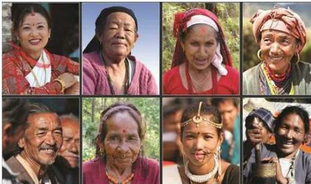
केही नेपाली मुहारहरू
६.१ नेपालको सामाजिक जीवन
क्षेत्रफलको हिसाबले नेपाल विश्वको मध्यम आकारको मुलुक मानिन्छ। यद्यपि नेपाल विविधताले भरिपूर्ण छ। नेपालमा भौगोलिक, जातीय, भाषिक, धार्मिक तथा सांस्कृतिक विविधता स्पष्ट देख्न पाइन्छ। यसर्थ, नेपाल बहुजातीय, बहुभाषिक, बहुधार्मिक र बहुसांस्कृतिक देश हो। क्षेत्री, ब्राह्मण, मगर, थारु, तामाङ, नेवार, मुसलमान, कामी, यादव, राई, गुरुङ जस्ता जनसङ्ख्याको आकारका हिसाबले ठूला जनजातिलगायतका १४२ जातजातिका मानिसहरू यहाँ बस्छन्। यिनीहरूको मातृभाषाको रूपमा आ-आफ्नै भाषा
नेपाल परिचय/१९९
छन् । यहाँ १० ओटा धर्म मान्ने मानिसहरू बस्छन् । हिन्दु धर्म मान्ने मानिसहरू शिव, गणेश, विष्णु, दुर्गा आदिको पूजा गर्छन् । यिनीहरूमध्ये धेरैजसो मस्टोलाई कुलदेवता मान्दछन् । बुद्ध धर्मका अनुयायीहरूले भगवान् बुद्धलाई पूजा गर्छन् । इस्लाम धर्म मान्नेहरूले ईश्वरलाई अल्लाह भन्दछन् । इसाई धर्म मान्नेहरू चर्चमा गएर क्राइस्टको प्रार्थना गर्दछन् । किराँत धर्म मान्नेहरू पारुहाड र सुडनिमा (सुमिनमा) लाई मान्दछन् । नेपाल संस्कृतिमा धनी राष्ट्र हो । बहुभाषी, बहुजाति र बहुधर्मका मानिसका आ-आफ्नै भेषभूषा र संस्कृति छन् । व्यक्तिबाट परिवार, परिवारबाट समाज र समाजबाट राष्ट्र बनेको हुन्छ । समाजाभित्र विभिन्न धर्म, पेसा, जातजाति, संस्कृति, भाषाभाषी, भेषभूषा, खानपान, रहनसहन, चाडपर्व, उत्सव आदि भएका मानिसहरू बसोबास गर्दछन् । यसैअनुरूप समाजमा विभिन्न गतिविधि हुने गर्दछ । समाजमा हुने विभिन्न राजनीतिक, धार्मिक, आर्थिक, सांस्कृतिक गतिविधिदेखि लिएर ज्ञान-विज्ञान, साहित्य, कला, मनोरञ्जन आदि जस्ता सम्पूर्ण गतिविधि राष्ट्रलाई पहिचान गराउने तत्वहरू हुन् ।
६.१.१ जातिगत विविधता
नेपाल जातिगत विविधतायुक्त मुलुक हो । राष्ट्रिय जनगणना २०७८ अनुसार नेपालको जातिगत जनसङ्ख्या विवरण तालिका ६.१ मा राखिएको छ ।
तालिका नं. ६.१
जातिगत जनसङ्ख्या विवरण
| क्र.सं. | जातजातिहरू | Caste/ethnicity | जम्मा | जम्मा% |
|---|---|---|---|---|
| १ | क्षेत्री | Kshatri | ४७९६९९५ | १६.४५ |
| २ | ब्राह्मण-पहाडी | Brahman - Hill | ३२९२३७३ | ११.२९ |
| ३ | मगर | Magar | २०१३४९८ | ६.९ |
| ४ | थारु | Tharu | १८०७१२४ | ६.२ |
| ५ | तामाङ | Tamang | १६३९८६६ | ५.६२ |
| ६ | विश्वकर्मा | Bishwokarma | १४७००१० | ५.०४ |
| ७ | मुसलमान | Musalman | १४१८६७७ | ४.८६ |
| ८ | नेवा: (नेवार) | Newa: (Newar) | १३४१३६३ | ४.६ |
| ९ | यादव | Yadav | १२२८५८१ | ४.२१ |
| १० | राई | Rai | ६४०६७४ | २.२ |
| ११ | परियार | Pariyar | ५६५९३२ | १.९४ |
| १२ | गुरुङ | Gurung | ५४३७९० | १.८६ |
| १३ | ठकुरी | Thakuri | ४९४४७० | १.७ |
१९२/नेपाल परिचय
| १४ | मिजार | Mijar | ४५२२२९ | ९.५५ |
|---|---|---|---|---|
| १५ | तेली | Teli | ४३१३४७ | ९.४८ |
| १६ | याक्थुङ/लिम्बू | Yakthung/Limbu | ४१४७०४ | ९.४२ |
| १७ | चमार/हरिजन/राम | Chamar/Harijan/Ram | ३९३२५५ | ९.३५ |
| १८ | कोइरी/कुशवाहा | Koiri/Kushwaha | ३५५७०७ | ९.२२ |
| १९ | कुमर्मी | Kurmi | २७७७८६ | ०.९५ |
| २० | मुसहर | Musahar | २६४९७४ | ०.९१ |
| २१ | धानुक | Dhanuk | २५२१०५ | ०.८६ |
| २२ | दुसाध/पासवान/पासी | Dusadh/Pasawan/Pasi | २५०९७७ | ०.८६ |
| २३ | ब्राह्मण-तराई | Brahman - Tarai | २१७७७४ | ०.७५ |
| २४ | मल्लाह | Mallaha | २०७००६ | ०.७१ |
| २५ | सन्यासी/दसनामी | Sanyasi/Dasnami | १९८८४९ | ०.६८ |
| २६ | केवट | Kewat | १८४२९८ | ०.६३ |
| २७ | कानू | Kanu | १५२८६८ | ०.५२ |
| २८ | हजाम/ठाकुर | Hajam/Thakur | १३६४८७ | ०.४७ |
| २९ | कलवार | Kalwar | १३४९१४ | ०.४६ |
| ३० | राजबंशी | Rajbansi | १३२५६४ | ०.४५ |
| ३१ | शेपा | Sherpa | १३०६३७ | ०.४५ |
| ३२ | कुमाल | Kumal | १२९७०२ | ०.४४ |
| ३३ | तत्मा/तत्त्वा | Tatma/Tatwa | १२६०१८ | ०.४३ |
| ३४ | खत्वे | Khatwe | १२४०६२ | ०.४३ |
| ३५ | घर्ती/भुजेल | Gharti/Bhujel | १२०२४५ | ०.४१ |
| ३६ | माभी | Majhi | १११३५२ | ०.३८ |
| ३७ | नुनिया | Nuniya | १०८७२३ | ०.३७ |
| ३८ | सुन्डी | Sundi | १०७३८० | ०.३७ |
| ३९ | धोबी | Dhobi | १०१०८९ | ०.३५ |
| ४० | लोहार | Lohar | १००६८० | ०.३५ |
| ४१ | बिन/बिन्दा | Bin/Binda | ९६९७४ | ०.३३ |
| ४२ | कम्हर | Kumhar | ९५७२४ | ०.३३ |
नेपाल परिचय/१९३
| ४३ | सोनार | Sonar | ९३३८० | ०.३२ |
|---|---|---|---|---|
| ४४ | चेपाड/प्रजा | Chepang/Praja | ८४३६४ | ०.२९ |
| ४५ | रानाथारू | Ranatharu | ८३३०८ | ०.२९ |
| ४६ | दनुवार | Danuwar | ८२७८४ | ०.२८ |
| ४७ | सुनुवार | Sunuwar | ७८९१० | ०.२७ |
| ४८ | हलुवाई | Haluwai | ७१७९६ | ०.२५ |
| ४९ | बरई | Baraee | ६८०११ | ०.२३ |
| ५० | बॉंतर/सदौर | Bantar/Sardar | ६१६८७ | ०.२१ |
| ५१ | काहर | Kahar | ५९८८२ | ०.२१ |
| ५२ | सन्थाल | Santhal | ५७३१० | ०.२ |
| ५३ | बानियाँ | Baniyan | ५३६५५ | ०.१८ |
| ५४ | खतबनियन | Kathabaniyan | ५२४६६ | ०.१८ |
| ५५ | बाधी | Badhaee/Badhee | ५२४३७ | ०.१८ |
| ५६ | उराँउ | Oraon/Kudukh | ४६८४० | ०.१६ |
| ५७ | राजपुत | Rajput | ४६५७७ | ०.१६ |
| ५८ | अमत | Amat | ४६४७१ | ०.१६ |
| ५९ | गनगाई | Gangai | ४१४४६ | ०.१४ |
| ६० | लोध | Lodh | ३९८७२ | ०.१४ |
| ६१ | गडेरी/भेडियार | Gaderi/Bhediyar | ३५४९७ | ०.१२ |
| ६२ | घले | Ghale | ३५४३४ | ०.१२ |
| ६३ | मारवाडी | Marwadi | ३३८०३ | ०.१२ |
| ६४ | कायस्थ | Kayastha | ३३५०२ | ०.११ |
| ६५ | कुलुङ | Kulung | ३३३८८ | ०.११ |
| ६६ | थामी | Thami | ३२७४३ | ०.११ |
| ६७ | भूमिहार | Bhumihar | ३२१९९ | ०.११ |
| ६८ | राजभर | Rajbhar | २९२४० | ०.१ |
| ६९ | रौनियार | Rauniyar | २७२५८ | ०.०९ |
| ७० | धिमाल | Dhimal | २५६४३ | ०.०९ |
| ७१ | खवास | Khawas | २२५५१ | ०.०८ |
१९४/नेपाल परिचय
| ७२ | ताजपुरिया | Tajpuriya | २०९८९ | ०.०७ |
|---|---|---|---|---|
| ७३ | कोइरी | Kori | २०६७० | ०.०७ |
| ७४ | डोम | Dom | १९९०१ | ०.०७ |
| ७५ | माली | Mali | १९६०५ | ०.०७ |
| ७६ | दराई | Darai | १८६९५ | ०.०६ |
| ७७ | याक्खा | Yakkha | १७४६० | ०.०६ |
| ७८ | भोटे | Bhote | १५८१८ | ०.०५ |
| ७९ | बान्तवा | Bantawa | १५७१९ | ०.०५ |
| ८० | राजधोब | Rajdhob | १५३९१ | ०.०५ |
| ८१ | धोनिया | Dhunia | १५०३३ | ०.०५ |
| ८२ | पहरी | Pahari | १५०१५ | ०.०५ |
| ८३ | बड्गाली | Bangali | १३८०० | ०.०५ |
| ८४ | गोंड | Gondh/Gond | १२२६७ | ०.०४ |
| ८५ | चाम्लिङ | Chamling | १२१७८ | ०.०४ |
| ८६ | छन्त्याल/छन्तेल | Chhantyal/Chhantel | ११९६३ | ०.०४ |
| ८७ | थकाली | Thakali | ११७४१ | ०.०४ |
| ८८ | बादी | Badi | ११४७० | ०.०४ |
| ८९ | बोटे | Bote | ११२५८ | ०.०४ |
| ९० | पुन | Pun | ९८२७ | ०.०३ |
| ९१ | हयोल्मो/हयोल्मोपा | Hyolmo/Yholmopa | ९८१९ | ०.०३ |
| ९२ | खतिक | Khatik | ९१५२ | ०.०३ |
| ९३ | याम्फू | Yamphu | ९१११ | ०.०३ |
| ९४ | केवारत | Kewarat | ८८०९ | ०.०३ |
| ९५ | बराम/बरामू | Baram / Baramu | ७८५९ | ०.०३ |
| ९६ | देव | Dev | ७४१८ | ०.०३ |
| ९७ | नाछिरिङ | Nachhiring | ७३०० | ०.०३ |
| ९८ | गाइने | Gaine | ६९७१ | ०.०२ |
| ९९ | बाहिङ | Bahing | ६५४७ | ०.०२ |
| १०० | थुलुङ | Thulung | ६२३९ | ०.०२ |
नेपाल परिचय/१९५
| 909 | जिरेल | Jirel | ६०३९ | ०.०२ |
|---|---|---|---|---|
| 902 | खालिङ | Khaling | ५६६९ | ०.०२ |
| 903 | आठपहरिया | Aathpahariya | ५६७६ | ०.०२ |
| 908 | डोल्पो | Dolpo | ५६१६ | ०.०२ |
| 904 | सरबरिया | Sarbaria | ५७९३ | ०.०२ |
| 906 | मेवाहाङ | Mewahang | ५७२७ | ०.०२ |
| 909 | व्यासी/सौका | Byasi/Sauka | ५७१८ | ०.०२ |
| 90८ | दुरा | Dura | ५५६१ | ०.०२ |
| 909 | मेचे | Meche | ५१९३ | ०.०२ |
| 910 | राजी | Raji | ५१२५ | ०.०२ |
| 911 | साम्पाङ | Sampang | ४८४१ | ०.०२ |
| 912 | चाइ/खुलौत | Chai/Khulaut | ४८०५ | ०.०२ |
| 913 | चुम्बा/नुब्री | Chumba/Nubri | ४४१४ | ०.०२ |
| 918 | धनकर/धरीकर | Dhankar/ Dharikar | ४०९० | ०.०१ |
| 914 | मुन्डा | Munda | ३५६९ | ०.०१ |
| 916 | लेप्चा | Lepcha | ३५७६ | ०.०१ |
| 919 | पत्थरकड्डा/ कुश्वादिया | Pattharkatta/ Kushwadiya | ३३४३ | ०.०१ |
| 916 | हायु | Hayu | ३०६९ | ०.०१ |
| 919 | बेल्दार | Beldar | ३०३७ | ०.०१ |
| 920 | हल्खोर | Halkhor | २९२९ | ०.०१ |
| 921 | नतुवा | Natuwa | २६९६ | ०.०१ |
| 922 | लोहारुङ | Loharung | २५९८ | ०.०१ |
| 923 | कमार | Kamar | २५३२ | ०.०१ |
| 928 | धन्दी | Dhandi | २३३९ | ०.०१ |
| 924 | दोने | Done | २१२५ | ०.०१ |
| 926 | मुगल/मुगुम | Mugal/Mugum | २१२४ | ०.०१ |
| 929 | पञ्जाबी/शिख | Punjabi/Sikh | १८४६ | ०.०१ |
| 926 | कमरोङ | Karmarong | १६६३ | ०.०१ |
१९६/नेपाल परिचय
| १२९ | चिडिमार | Chidimar | १६१५ | ०.०१ |
|---|---|---|---|---|
| १३० | किसान | Kisan | १४७९ | ०.०१ |
| १३१ | ल्होपा | Lhopa | १३९० | ० |
| १३२ | कलार | KaaLr | ९३१ | ० |
| १३३ | फ्री | Fri | ९२१ | ० |
| १३४ | कोचे | Koche | ८४७ | ० |
| १३५ | तोप्केगोला | Topkegola | ६४२ | ० |
| १३६ | राउटे | Raute | ५६६ | ० |
| १३७ | वालुङ | Walung | ४८१ | ० |
| १३८ | ल्होमी | Lhomi | ३५५ | ० |
| १३९ | सुरेल | Surel | ३१८ | ० |
| १४० | कुसुन्डा | Kusunda | २५३ | ० |
| १४१ | बनकरिया | Bankariya | १८० | ० |
| १४२ | नुराङ | Nurang | ३६ | ० |
| १४३ | अन्य | Others | ५८८८ | ०.०२ |
| १४४ | विदेशी | Foreigner | १३७४०७ | ०.४७ |
| १४५ | नखुलेको | Not stated | ४४३६ | ०.०२ |
| जम्मा | Total | २९१६४५७८ | १०० |
स्रोत : राष्ट्रिय जनगणना २०७८
६.१.२ नेपालका सूचीकृत आदिवासी जनजातिहरू
नेपाल सरकारले ६० आदिवासी जनजातिहरू सूचीकृत गरेको छ। नेपालमा आर्थिक, सामाजिक, राजनीतिक दृष्टिले पिछडिएका जाति जनजातिहरूको उत्थानको उद्देश्यले वि.सं. २०५४ मा राष्ट्रिय जनजाति विकास समितिको गठन, वि.सं. २०५८ मा आदिवासी जनजाति उत्थान राष्ट्रिय प्रतिष्ठान र २०७५ सालमा नेपालको संवैधानिक प्रावधान बमोजिम आदिवासी जनजाति आयोग संवैधानिक अङ्गको रूपमा स्थापना भएको छ।
६.१.३ बसोबास, रहनसहन र भेषभूषा
नेपालको धरातलीय विविधता र हावापानीको विविधताबीच गहिरो र सीधा सम्बन्ध छ। धरातलीय विविधता र हावापानीको विविधताका कारण नै त्यहाँ बस्ने मानिसहरूको
नेपाल परिचय/१९७
नेपालका केही परम्परागत गरगहनाहरू
बसोबास, रहनसहन र भेषभूषामा पनि विविधता रहेको छ । धरातलीय विभाजनअनुसार तराई, पहाड र हिमालको बसोबास, रहनसहन र भेषभूषामा भएको विविधतालाई तल चर्चा गरिएको छ :
हिमाली प्रदेश
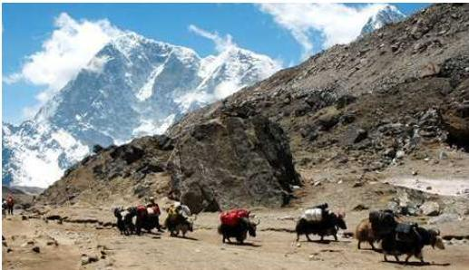
हिमाली भेगमा भारी ओसार्दै चौरीगाई
नेपालको सबैभन्दा उत्तरी क्षेत्रमा हिमाली प्रदेश पर्दछ । वर्षभरिमा आधाजित समय हिउँले
१९.८/नेपाल परिचय
ढाकिरहने हुनाले यहाँको भूमि कम उब्जाउशील छ। यहाँ आलु, जौ, उवा, स्याउ आदि जस्ता खाद्यान्न उत्पादन हुन्छन्।
यो क्षेत्रमा जनसङ्ख्याको चाप एकदमै कम छ। यो क्षेत्रमा शेपा, गुरुङ, भोटे आदि जातिको मुख्य बसोबास भएको पाइन्छ। यहाँ अत्यन्तै जाडो हुने भएकाले कतिपय मानिसहरू पहाडी र तराई जिल्लामा जाडो छल्नका साथै जडीबुटीको व्यापार गरी थप आय आर्जन गर्न जाने गर्दछन्।
यो क्षेत्रमा विकासका पूर्वाधारहरूको खासै विकास नभएकाले यहाँको जीवन एकदमै कष्टकर रहेको छ भने जलवायु परिवर्तनको असरले यो क्षेत्रमा बसोबास गर्ने मानिसहरूको परम्परागत जीवनशैलीमा भन्ने थप समस्या सिर्जना भएको छ। यस क्षेत्रमा बस्नेले बाक्लो प्रकारका लुगा लगाउने गर्दछन्। जस्तो- भोटो, दोचा, बक्खु आदि। यहाँका मानिसहरू विशेषतः जौ, कोदो, फापर, आलु, मासु एवम् यसबाट तयार गरिने परिकार खाने गर्दछन्।
पहाडी क्षेत्र
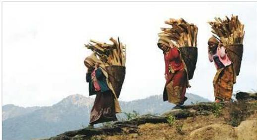
यो क्षेत्रमा पूर्वदेखि पश्चिमसम्म विभिन्न जातजातिका मानिसहरू बस्दछन्। पूर्वी नेपालमा मुख्यतया राई, लिम्बू बस्छन् भने मध्य नेपालमा ब्राह्मण, क्षेत्री, नेवार, मगर, गुरुङ आदि जाति पाइन्छन्। पश्चिममा पनि यिनै जाति जनजातिहरू पाइन्छन्। जात, धर्मअनुसार प्रत्येक समुदायको आ-आफ्नै भाषा, संस्कृति, रीतिरिवाज रहेको छ। यस प्रदेशमा बसोबास गर्ने मानिसले दौरा, सुरुवाल, कछाड, पटुका, टोपी आदि लगाउने गर्दछन्। यहाँका मानिस मकै, कोदो, दही, दूध, भटमासजस्ता खाद्यवस्तु तथा त्यसबाट तयार गरिएका परिकारहरू खाने गर्दछन्। यस प्रदेशका अधिकांश ठाउँमा यातायात पुगे पनि
नेपाल परिचय/१९९
केही स्थानमा बाटोघाटोको कमी, शिक्षा तथा सञ्चार जस्ता आधारभूत आवश्यकताको कमीले गर्दा यहाँको जनजीवन पनि कष्टकर नै रहेको छ ।
तराई प्रदेश
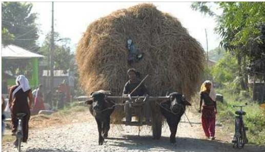
तराईमा सामान ढुवानी गर्न गाडाको प्रयोग
नेपालको दक्षिणमा तराई प्रदेश पर्दछ । यो क्षेत्र समथर भएकाले यातायातको विकास भएको पाइन्छ । उब्जाउशील जमिन भएकाले यहाँको जनजीवन हिमाली र पहाडी जनजीवनभन्दा सहज रहेको छ । यहाँका मानिसहरूको मुख्य पेसा कृषि हो । यहाँ अलि बढी गर्मी हुने हुँदा यहाँका मानिस धोती, कुर्ता, लुंगी लगाउने गर्दछन् । यस प्रदेशका मानिसहरूले विशेषतः दाल, रोटी, भात, माछा, दही, दुधजस्ता खानेकुरा खाने गरेको पाइन्छ । तराईमा लक्ष्मीपूजा, छठ, सिरुवा पर्व, माघी पर्वहरू धुमधामसँग मनाइन्छ ।
६.१.४ नेपालका विभिन्न जातजातिहरूको सङ्कलित परिचय
नेपाल एक बहुजाति, बहुभाषी, बहुधार्मिक एवम् बहुसांस्कृतिक मुलुक हो । अतः भाषा, संस्कृति, धर्म र जातिको दृष्टिले नेपाल धनी राष्ट्र हो । अनेकता र विविधता नै यहाँको अनौठो र उल्लेखनीय पक्ष हो । नेपालको यही विविधता संरक्षणको आवश्यकता महसुस गरी नेपाल पर्यटन बोर्ड र नेपाल राष्ट्रिय जातीय सङ्ग्रहालय जस्ता सङ्घ-संस्थाहरूले महत्वपूर्ण भूमिका खेलिरहेका छन् । नेपालमा रहेका विभिन्न जातजातिमध्ये केही जातजातिको बारेमा निम्नानुसार चर्चा गरिएको छ:
बाहुन / क्षेत्री
बाहुन / क्षेत्रीलाई खस र वैदिक आर्यको सम्मिश्रण मानिन्छ । जने धारण गर्ने हुँदा यिनीहरूलाई तागाधारी पनि भनिन्छ । पूर्वीया र कुमाई भनेर बाहुनलाई दुई समूहमा विभाजन गरिएको
२००/नेपाल परिचय
पाइन्छ । बाहुनहरूलाई परम्परागत रूपमा उपाध्याय र जैसी गरी दुई श्रेणीमा विभाजन गर्ने चलन थियो । कर्णाली प्रदेशमा जनै धारण नगर्ने क्षेत्रीहरू छन्, जसलाई मतवाली क्षेत्री भनिन्छ । यिनीहरू देशका विभिन्न जिल्लामा छरिएर रहेका छन् । ब्राह्मण पुरेत्याई वा कर्मकाण्ड, ज्योतिष हेर्ने काम, खेतीपाती र सरकारी नोकरीमा यिनीहरू बढी संलग्न भएको पाइन्छ । यिनीहरू वैदिक सनातनी हिन्दु धर्म मान्दछन् । बाहुन र क्षेत्रीहरूले बोल्ने भाषा भारोपेली समूहको नेपाली भाषा हो, जुन देवनागरी लिपिमा लेख्ने गरिन्छ । यिनीहरू आफूलाई खस-आर्य भन्न रुचाउँछन् ।
नेवार
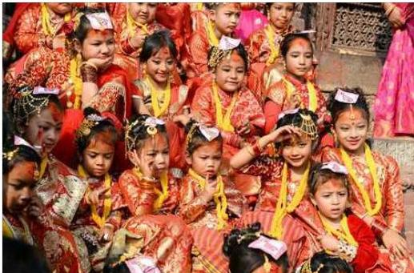
इही (बेलविवाह)
काठमाडौँको पुरानो नाम नेपाल मण्डल र वरपरका क्षेत्रहरूमा बसोबास गर्ने आफ्नै मौलिक भाषा नेपाल भाषा बोल्ने तथा संस्कृतिका धनी विभिन्न जातजातिका मानिसहरूको सामूहिक रूप नै नेवार हो । यिनीहरू यस क्षेत्रका मूल निवासी, आदिवासी र भूमिपुत्र हुन् । नेवार समुदाय तिब्बत, बर्मेली र आर्यहरूको सम्मिश्रणबाट उदय भएको समुदाय हो । मूलतः बौद्ध तथा हिन्दु धर्म अवलम्बन गर्ने यिनीहरूमा धार्मिक सहिष्णुता रहेको पाइन्छ । यिनीहरू सबैको साभा भनेको नेपाल भाषा तथा नेवारी संस्कृति नै हो । यिनीहरूको छुट्टै लिपि नेपाल लिपि हो । यस समुदायमा पुरेतदेखि शूद्रसम्मको पेसा अपनाउनेहरू छन् । नेवारहरू शिल्पकारीमा निपुण हुन्छन् र विभिन्न सीपमूलक पेसा अँगालेका छन् । यिनीहरूको प्रमुख पेसा व्यापार तथा कृषि हो । साथै यिनीहरूले जातीय पेसा अँगालेका छन् । पेसाका सिलसिलामा नेपालका अधिकांश जिल्लाहरूमा नेवार समुदायको बसोबास रहेको पाइन्छ ।
नेपाल परिचय/२०१
मगर
नेपालको जातिगत जनसङ्ख्याका आधारमा तेस्रो तथा आदिवासी जनजातिमध्ये पहिलो स्थानमा पर्ने मगर जातिको बसोबास सतहत्तरै जिल्लामा रहेको छ। ऐतिहासिक मगरात भनिने राप्ती र गण्डकी प्रदेश क्षेत्रलाई मगर जातिको मूलथलो मानिन्छ। लुम्बिनी र गण्डकी प्रदेशमा मगर जातिको सघन बसोबास रहेको छ। मगर जातिका आले, घर्ती, थापा, पुन, बुढा (बुढाथोकी), राना र रोका गरी मुख्य ७ थरघरहरू रहेका छन्। थरघर भनेको अन्तर-थर वैवाहिक सञ्जाल समूह हो। मगर जातिका प्रमुख ७ थरघरअन्तर्गत हजारौँ थरहरू बनेका छन्। भोटबर्मेली भाषापरिवारको मगरढुट, मगरखाम र मगरकाइके भाषा बोलिने यो समुदायको जीवनचक्रीय संस्कार एवं पूजाआजा मूल रूपमा पितृ र प्रकृतिपूजामा आधारित रहेको छ। उनीहरूले पितृ र प्रकृतिका तीन शक्ति - पितृशक्ति (पूर्वजहरू बराह, बज्यूबराज्यू, कुलान, पिटर, सिद्ध, भैरम, भूँयर, बाई, सिमवाई, मण्डली, थानी, भाँक्री, सिरम, मायू, माई आदि), प्रकृतिशक्ति (भूम्या, बल, भूमे, सिमेभूमे, वनजङ्गल, खोलानाला, सिमसार, जलथल, हरेलो आदि) र राजशक्ति (मगरातका मगर राजाहरू र राज्यसत्ताका प्रतीक कोट-मौला) को पूजाआजा वर्षै बाली र हिउँदै बाली लगाउने र स्याहार्ने बेलामा गर्दछन्। बडादसैँ, मंसिरे पूर्णिमा, माघे सङ्क्रान्ति र वैशाख पूर्णिमाको अवसर पारेर कुल पितृपूजा गर्दछन्। शाहकालीन दरबारमा मगर पुजारीको परम्परा थियो। गोरखा दरबार, हनुमानढोका दर्सैघरलगायतमा अहिले पनि मगर पुजारीको व्यवस्था छ। डोल्पा क्षेत्रका मगरहरूले पितृ र प्रकृतिका साथै बौद्ध धर्म मान्ने गर्दछन्। मगर जातिको आफ्नै चेलीबेटी (भान्जा/ज्वाइँ, छोरी, दिदीबिहिनी) बाट संस्कार सम्पादन गराउने मौलिक परम्परा छ। माघेसङ्क्रान्ति, श्रीपञ्चमी, यउनाट, छैगो, रम्जे, चैती, चैतेदसैँ, उँभौलीभेजा (चण्डीपूर्ण), भूमे (भूम्या), साउने सङ्क्रान्ति, भाँक्रीमेला, दसैँ, तिहार, उँधौलीभेजा (मंसिरेभेजा), पुसेपन्थ्र, पितृपूजा, कोट-मौला पूजा, बराहापूजा आदि चाडबाडहरू मनाउँछन्। यस्ता चाडवाड, उत्सव तथा विभिन्न संस्कारहरूमा यानीमाया, सुनिमाया, ठाडोभाका, सालैजो, भाम्रे, टप्पा, ख्याली, भोरा, चुड्का, ओहोली, ज्यानै, सरायँ, सारडड्या, पैस्यारु, देउसीभैलो, मारुनी (सोरठी, सिडारु, गोपीचन, पुख्यौली नाच), घाँटु, जीवैमामा (ज्यो मा रे), कौहा, भूम्या, मैयुर (सारजे), हुर्रा आदि गीत तथा नृत्यहरू प्रस्तुत गरिन्छ। मगर जातिको परम्परागत संस्थालाई भेजा भनिन्छ। मध्यकालसम्म मगर जातिले मगरात क्षेत्रमा राज्य सञ्चालन गरेको तथा उनीहरू खानी व्यवसाय र सैन्यकलामा निपुण रहेको भन्ने इतिहासमा उल्लेख पाइन्छ। अहिले यो समुदाय पशुपालन, कृषि, हस्तकला, सुरक्षा, प्रशासन, शिक्षालगायत वैदेशिक रोजगारी जस्ता पेसामा संलग्न रहेको पाइन्छ।
बुढा क्षेत्री
नेपालका अति प्राचीन जातिहरूमध्ये बुढा क्षेत्री जाति नेपालको आदिवासी जाति हो। बाइसे चौबिसे राज्यअन्तर्गत सेनाको उच्च पद हो बुढा। कालान्तरमा यसलाई क्षेत्रीहरूले
२०२/नेपाल परिचय
थर कायम गरेका हुन् । यिनीहरूको मुख्य बसोबास कर्णाली प्रदेश र सुदूरपश्चिम प्रदेशका विभिन्न जिल्लामा रहेको पाइन्छ । यिनीहरूको मुख्य पेसा कृषि हो । बुढाक्षेत्रीलाई छोटकरीमा बि.सी. लेख्ने प्रचलन छ ।
थारू
थारू जाति नेपालको आदिवासी जनजातिमध्ये एक हो । थारूको मातृभाषा भारोपेली परिवारअन्तर्गत पर्दछ । थारू भाषा नेपालको चौथो ठूलो सङ्ख्याले बोल्ने भाषा हो । यिनीहरूको आदिम भूमि नेपालको भित्री मधेश तथा तराई क्षेत्र हो । लुम्बिनी प्रदेशमा यो जातिको सघन बसोबास रहेको छ । प्रकृतिपूजक थारू जातिले माघी चाडलाई नयाँ वर्षको रूपमा मनाउँछन् । यिनीहरू अट्वारी, अप्टम्की, डस्या, डेवारी, गुरही जस्ता चाडबाड मनाउँछन् । सामूहिक पूजापाठका लागि प्रत्येक थारू गाउँमा मरुवा, ग्रामथान, भुईहारथान हुन्छ । पूजाआजामा गुरुवा, केशौकाको भूमिका रहन्छ । उनीहरू भुमरा, सखिया, हुडुड्वा, मघौटा, लड्डीलगायत नाचगानमा रमाउँछन् । थारू जातिको परम्परागत संस्थालाई बर्घर वा भलमन्सा भनिन्छ । यो जातिको मुख्य पेसा कृषि हो ।
तामाङ
आदिवासी जनजातिमा गणना हुने तामाङको बसोबास क्षेत्रलाई ताम्सालिङ भनिन्छ । तामाङ समाज थुप्रै थरहरूको आधारमा दाजुभाइ र कुटुम्बेरी साइनोमा जोडिएर सङ्गठित भएको पाइन्छ । यिनीहरू काठमाडौँ उपत्यका र सो वरिपरिका जिल्लाहरूमा घना रूपमा बसोबास गरेका छन् । यिनीहरूको मातृभाषालाई तामाङ ग्योइ भनिन्छ । तामाङ भाषाको लेखनमा तामहिग र सम्भोटा लिपिको प्रयोग गरिन्छ । नेपालमा बोलिने भोटबर्मेली भाषा परिवारको भाषाहरूमध्ये तामाङ भाषा सबैभन्दा धेरै जनसङ्ख्याले बोल्दछन् । तामाङ भाषा नेपालको पाँचौँ ठूलो सङ्ख्याले बोल्ने भाषा हो । यिनीहरू हिमाली बज्रयानी बौद्ध धर्म मान्दछन् । नेपालको कुल बौद्ध धर्मावलम्बीको करिब आधा सङ्ख्या तामाङ समुदायको रहेको छ । तामाङ जातिले ल्होछार (नयाँ वर्ष), बुद्धजयन्ती, गोने ड्या (भदौ पूर्णिमा), मिसर पूर्णिमा आदि चाडपर्व मनाउँदछन् । पर्व उत्सवका अवसरमा सेलो, फाबर, म्हेन्दोमाया, बोम्साड, साइकोले, छेर्लु जस्ता गीत-नृत्य प्रस्तुत गर्दछन् । तामाङहरूको परम्परागत संस्थालाई नाङखोर र चोहो प्रणालीको रूपमा चिनिन्छ । नाङखोरको शाब्दिक अर्थ आपसी आदानप्रदान वा सहयोग भन्ने हुन्छ । चोहो समाजले चुन्ने मूली वा अगुवा हो । चोहोले गाउँका गान्बा वा भलादमी, उइमे वा भद्र महिला, ताम्बा अर्थात् जानिफकार, लामा, बोम्बो र अन्य व्यक्तिहरूको सरसल्लाहमा सामाजिक व्यवस्था कायम गर्ने र न्याय निरूपण गर्ने काम गर्दछ । पशुपालन, कृषि, थाङ्का र विभिन्न हस्तकलाका सामग्रीहरू निर्माण गर्नु यिनीहरूको पेसा हो ।
राई
आदिवासी जनजाति समुदायभित्रको राई जातिलाई ‘खम्बु’, ‘जिमिदार’ वा ‘जिमी’ नामले पनि चिन्ने गरिन्छ । यो जातिको मूलथलो खोटाङ, भोजपुर, सोलुखुम्बु, ओखलढुका, उदयपुर, संखुवासभा र धनकुटा हो । पाँचथर, इलाम, सुनसरी, मोरङ र भापातिर पनि
नेपाल परिचय/२०३
फैलिएका छन् । यो जातिभित्र २६ वटा भाषिक/थरगत समूहहरू रहेका छन् । आठपहरिया, बान्तवा, बेल्हारे, बायुङ/बाहिङ, चाम्लिङ, छिलिङ, छिन्ताङ, जेरो/जेरुङ, कुलुङ, खालिङ, थुलुङ, लोहोरुङ, याम्फु, मेवाहाङ/नेवाहाङ, नाछिरिङ, वाम्बुले, दुमी, साम्पाङ, कोयी/कोयू, पुमा, तिलुङ, लुङखिम, फाङदुवाली, दुङमाली, मुगा र देवास भाषिक/थरगत समूहहरू हुन् । यी भाषिक समूह (समुदाय)हरूमध्ये देवास भारोपेली भाषापरिवारअन्तर्गत बोलिने भाषा हो भने बाँकी सबै भोटबर्मेली भाषापरिवारका भाषा हुन् । पितृ र प्रकृतिपूजक राईहरूले मुन्दुमद्वारा निर्देशित किराँत धर्म मान्ने तथा आदिम पुर्खाहरू सुम्निमा-पारुहाङप्रति आस्था राख्ने र श्रद्धा गर्ने गर्छन् । कुलपितृ र प्रकृतिलाई अन्नबाट बनाइएको चोखो जाँड-रक्सी चढाउने गर्छन् । तीन चुला (आगो बलेको/जागृत)लाई सांस्कृतिक वा परम्परागत संस्थाका रूपमा लिने गर्दछन् । साल्पा सिलिचुङ, खुवालुङ र तुवाचुङलाई राईहरूले पवित्र स्थल मान्ने गर्दछन् । राईहरूको मुख्य चाड साकेला हो । यो वर्षमा दुईचोटि उँधौली (मङ्सिरे धान्य पूर्णिमा) र उँभौली (वैशाखे धान्य पूर्णिमा) का रूपमा मनाइन्छ । ढोल र झ्याम्टाको तालमा नाचगान गरी साकेला धुमधामसँग मनाउने गरिन्छ ।
तम् (गुरुङ)
नेपालको आदिवासी तमू (गुरुङ) जाति अन्नपूर्ण हिमालयको काखमा बसोबास गर्ने रैथाने जाति हो । कास्की जिल्लाको कहोल सौथरलाई यो जातिले आफ्नो पुर्ख्यौली थलो मान्दछ । गण्डकी प्रदेशमा यो जातिको सघन बसोबास रहेको छ । आनुवंशिक संरचनाका आधारमा तमू (गुरुङ)हरू साइनो-मजोलियाई हुन् । यिनीहरूको मुख्य चाड तमू लहोसार नेपाली पात्रोअनुसार पुस १५ गते मनाइन्छ । खेगीहरू (पुरोहित) पच्चू, क्लेझी र लमद्वारा पुस १४ गते मध्यरातमा अनुष्ठान गरी लहो (वर्ष) परिवर्तन भएको सङ्केत गरेपछि पुस १५ गते तमू लहोसार मनाउने गरिन्छ । माडी ल्है, ट्होल्है, सिल्दो-नाल्दो, प्क्रो वापा, गैडुलबा, थासो वापा आदि पर्वहरू पनि मनाउने गरिन्छ । यिनीहरूको मातृभाषा ‘तमू क्वी’ भोट-बर्मेली भाषाअन्तर्गत पर्दछ । तमू समाजमा सोरठी, भोरा, सेकाँ, सालैज्यो, घाँटु, कौडा आदि नाचगानहरू प्रचलित छन् । यिनीहरूको पुर्ख्यौली पेसा पशुपालन, कृषि र सैन्य सेवा हो । नेपाल एकीकरणको समयदेखि यो जाति गोर्खाली सेनाको महत्वपूर्ण हिस्सा बनेको छ । वर्तमान समयमा यिनीहरू सेना, प्रशासन, शिक्षा, उद्योग, व्यापार-व्यवसाय, राजनीतिलगायत विविध पेसा व्यवसायमा संलग्न रहेका छन् ।
लिम्बू
नेपालको आदिवासी लिम्बू जाति अरुण नदीपूर्व सङ्खुवासभा, धनकुटा, तेहथुम, ताप्लेजुङ, पाँचथर, इलाम, भापा, मोरङ र सुनसरीमा बसोबास गर्दछन् । लिम्बू जातिमा पनि धेरै थर छन् । यिनीहरू कृषि तथा पशुपालन व्यवसाय गर्दछन् । लिम्बूहरू प्रकृति पूजा गर्ने किराँत धर्म मान्दछन् ।
शेपां
शेपां जातिको आदिथलो सोलुखुम्बु जिल्लाको उत्तरी क्षेत्रलाई मानिन्छ । शेपांहरू देशका
२०४/नेपाल परिचय
विभिन्न हिमाली जिल्लामा छरिएर रहेका छन् । यिनीहरू पशुपालन र खेतीपाती गर्दछन् । यिनीहरू लामा बौद्ध धर्म सम्प्रदायी हुन् भने यिनीहरूको भाषा भोट-बर्मेली परिवारभित्र पर्दछ । ल्होसार, डुम्जी, फाडडी ल्होप्सो, याज्यार्द, कडसुर, ढुकपा छेच्च्यू, ड्युडने, छेच्च्यू यिनीहरूका प्रमुख चाड हुन् ।
सुनुवार
सुनुवार जाति नेपालका आदिवासीमध्येको एक प्रमुख र ऐतिहासिक जाति हो । नेपालको इतिहासमा किराँतकालीन राज्यव्यवस्था सञ्चालनदेखि नै किराँतीहरूको पहिचान रहिआएको छ । सुनुवार किराँत वंशको चार शाखा/समुदाय “राई, लिम्बू, सुनुवार र यायोक्खा” मध्येको एक किराँती समुदाय हो । खस भाषामा “सुनुवार” र मातृभाषामा “कौँइच” भनिन्छ । नेपालको पूर्वी भूभाग तथा भारतको सिक्किम, दार्जिलिङ क्षेत्रमा मुखिया भनेर चिनिएका छन् । प्रकृति तथा पितृपूजक सुनुवार जाति किराँत धर्मावलम्बी हुन् । यिनीहरूको धर्म/दर्शनशास्त्रलाई ‘मुक्दुम’ भनिन्छ । यस जातिको मूल थाकथलो रामेछाप, ओखलढुजा, दोलखा, सिन्धुली भए पनि हाल मुख्य सहरहरू र नेपालको पूर्वी क्षेत्रमा सघन बस्ती रहेको छ । यस जातिको परम्परागत पेसा सिकार गर्ने, बाँसको कलात्मक सामग्रीहरू बनाउने भए पनि हाल कृषि पेसामा आबद्ध रहेका छन् ।
वैशाख शुक्ल पूर्णिमाको दिन मनाइने स्याँदर पिदार “उँभौली” र मङ्सिर शुक्ल पूर्णिमाको दिन मनाइने स्याँदर पिदार “उँधौली” मुख्य पर्व हो । यस अवसरमा पितृ तथा प्रकृतिको पूजा आराधना गर्दै स्याँदर सिलको आयोजना गरी मनाउने गर्दछन् ।
चेपाड
नेपालको आदिवासी जनजाति चेपाडलाई प्रजा पनि भन्ने गरिन्छ । यिनीहरू चितवन, मकवानपुर, धादिड, गोरखा, लमजुङ र तन्हुँ जिल्लाको भिरालो पाखामा र बाँके, बर्दिया, नवलपरासी, बारा आदि जिल्लाहरूमा समेत बसोबास गर्दछन् । यिनीहरूका धेरैजसो परम्परागत स-साना एकतले खरले छाएका घर हुन्छन् । यिनीहरूको परम्परागत पेसा खोरिया प्रणालीको कृषि व्यवसाय, कन्दमुलको सङ्ग्रह र सिकार हो ।
उराँव (भाँगड)
आदिवासी जनजातिमध्ये उराँव (भाँगड) जातिको बसोबास नेपालको कोशी प्रदेश, मधेश प्रदेश र सुदूरपश्चिम प्रदेशको तराई भू-भागमा रहेको छ । उराँव जातिलाई अन्य जातिले भाँगड भनेर चिन्दछन् । उनीहरूले द्रविड भाषा परिवारको उराँव भाषा बोल्दछन् । सरना (प्रकृतिपूजक) धर्म मान्ने उराँव जातिले सूर्य, चन्द्रमा, धरती, रुख, बिरुवा, रुखको हाँगा, भूमि, वनजङ्गल, नदी, पहाड, गाईवस्तु, पितृ आदिलाई पूजा गर्दछन् । करमपूजा यिनीहरूको सबैभन्दा ठूलो चाड हो । यसका अतिरिक्त जितिया, सुकराती, लगपाचे, चौरचन्दो, सरहुल, फणु, सिरुवा, जतरा, श्रीपञ्चमी, खरियानी, अखरिया पूजा, गाभ होअना, पुना मन्ना, ध्यानी पूजा आदि चाडवाड एवम् पूजाआजा मनाउने गर्दछन् । कुलपूजाको
नेपाल परिचय/२०५
रूपमा डन्डाकड्ना, मुङ्गा पूजा, डंगरी र दहाचिंगडी पूजा गर्दछन् । परम्परागत पेसाको रूपमा ढाकी (डौडा), गुन्द्री (पिटरी), कुचो (चलकी), मार्चा, जड्गली जडीबुटीको औषधि, पिकर्क, हलो, काठका सरसमान, माछा मार्ने जाल, खरायो मार्ने जाल र बैदेल मार्ने जाल बनाउने गर्दछन् । उराँव जाति कृषि पेसामा निर्भर छन् ।
थामी
आदिवासी किराँत वंशको एक शाखा थामी जाति हो । थामीहरू दोलखा जिल्लाको सुस्पा, राडथली, चिराडथली, सुइतापड, कालिञ्चोक, लापीलाड, खोपाचागु, आलम्पु, सिस्कर, बुडथली आदि गाउँमा बसोबास गर्दछन् । यिनीहरू परम्परागत खेती तथा पशुपालन व्यवसाय गर्दछन् । यिनीहरू प्रकृतिपूजक किराँत धर्म मान्दछन् ।
राउटे
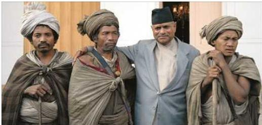
राउटे समुदायसँग पूर्वराष्ट्रपति डा. रामवरण यादव
नेपालको लोपोन्मुख आदिवासी जनजाति राउटेहरू पश्चिममा महाकालीदेखि पूर्वमा कालीगण्डकीको चुरे वनजड्गलमा विचरण गर्दै कन्दमूल, फलफूल र सिकार गरी जीविका निर्वाह गर्दछन् । वनका राजा ठान्ने यिनीहरू वनमा बस्ने, खेती नगर्ने र परम्परागत सीपको रूपमा काठका सरसामान बनाई गाउँलेहरूका अन्नपातसँग साटासाट गर्छन् । प्राय: जाल थापेर बाँदरको सिकार गर्ने राउटेहरूले समूहमा सिकार गर्दछन् । आफ्नो परम्परागत मूल्य मान्यतालाई कडाइका साथ पालना गराउन राउटेहरूको सम्पूर्ण अधिकार मुखियामा रहन्छ । राउटेहरूले बोल्ने भाषालाई ‘खामची’ भाषा भनिन्छ । यो भाषा भोटबर्मेली भाषापरिवारअन्तर्गत पर्दछ । यिनीहरूको समूहका सदस्य कसैको मृत्यु भएमा मृत्यु भएको भोलिपल्टै उक्त ठाउँमा भएका घरहरूमा आगो लगाई बसाई सर्ने परम्परा छ । प्रकृतिपूजक राउटेहरूले भूयार र मष्टोको उपासना गर्दछन् ।
धिमाल
आदिवासी जनजाति समुदायका धिमालहरू भापा, मोरङ र सुनसरी क्षेत्रमा बसोबास
२०६/नेपाल परिचय
गर्दछन्। भोटबर्मेली भाषापरिवारको धिमाल भाषा बोल्ने यो समुदायलाई तराईका किराँती भन्ने गरिन्छ। धिमालहरू कृषि, व्यापार व्यवसाय, मजदुरी, वैदेशिक रोजगार आदि पेसामा संलग्न छन्। प्रकृतिपूजक धिमालहरूले चार शक्ति : प्रकृतिशक्ति (सिमेभूमे, वनजङ्गल, खोलानाला, सिमसार, सिकारी, धरतीमाता आदि), पितृशक्ति (मृत्यु भइसकेका तीनपुस्ते पितृ), धामीशक्ति (धामीले ग्रामथानमा पुज्ने तीनपुस्ते धामी पितृ) र राजाशक्ति (आदिकालमा गाउँबस्तीको नेतृत्व गर्ने माभिवाराङ राजा) को पूजाआजा गर्दछन्। प्रत्येक वर्ष वैशाख २ गते लेटाङ राजारानी धिमाल डाँडामा जातिरी मेला लगाउँछन्। त्यसपछि प्रत्येक गाउँटोलमा माभीवाराङको नेतृत्वमा सिरजात, जातिरी मेलाको आयोजना गरिन्छ। असार २ गते मोरङको मंगलबारेमा सिरजात तथा जातिरी मेलाको समापन गरिन्छ। पार्बी (तिहार), सिरजात, जातिरी, फागुवा, माघे सड्कान्टि र सिरवा धिमालहरूको मुख्य चाडबाड हुन्। महिलाहरूले तान बुन्ने र घरेलु कपडा उत्पादन गर्ने, ढोल, उनी, सेरेन्जा, माछा मार्ने जाल, धानको बिउ राख्ने फुरा आदि बनाउने सीप तथा कलाका काम गर्दछन्। प्रत्येक धिमाल गाउँटोल सञ्चालन गर्ने माभीवाराङ परम्परागत संस्था तथा प्रथाजनित कानुनहरू छन्। धामीले ग्रामथानमा पूजा गर्ने र गाउँको रक्षाका लागि गाउँबन्धन गर्ने तथा ओभाले जोखाना हेरी ओखती उपचार गरी रोगव्याधीबाट बचाउने कार्यहरू गर्दछन्। यो समुदाय आफ्नै भाषा, सीप, कला, प्रविधि, ओखतीउपचार तथा संस्कृतिमा धेरै धनी छ।
थकाली
नेपालका आदिवासी जनजातिमा गणना हुने थकाली पनि एक हो। थकालीको मूल थलो थासाङ मुस्ताङ जिल्लाको दक्षिणी सीमाक्षेत्रमा पर्दछ। यिनीहरू हाल विभिन्न जिल्लामा बसोबास गर्दछन्। यिनीहरू आफ्नै भाषा बोल्छन्। यिनीहरूको आफ्नै भेषभूषा तथा गरगहना हुन्छ।
छल्याल
आदिवासी जनजातिमा गणना हुनेछल्याल जातिको मूलथलो म्याग्दी जिल्लाको कुइनेमङ्गले गाउँको भिङ्खानी हो। यिनीहरू बागलुङ, पाल्पा, रुकुम, प्युठान, दाङ आदि जिल्लामा पनि बसोबास गर्दछन्। यिनीहरू खाम भाषा बोल्दछन्। पुख्यौली रूपमा खानी खन्ने र प्रशोधन गर्ने भए तापनि यिनीहरूको मुख्य पेसा कृषि र पशुपालन हो।
राजवंशी (कोच)
भापा, मोरङ र सुनसरी क्षेत्रलाई आदिवासी जनजाति समुदायको राजवंशी जातिको मूलथलो मानिन्छ। उनीहरूलाई खासगरी मोरङ र भापाको भूमिपुत्र भनेर चिन्ने गरिन्छ। सनातनी प्रकृतिपूजक राजवंशी जातिको मातृभाषालाई कोच राजवंशी भनिन्छ। उनीहरूको प्रमुख चाड सिरवाको अवसरमा ग्रामथान पूजा र मेला हुने गर्दछ। यसका अतिरिक्त एकादशी, औसिया (तिहार), फगुवा, बिसौरी पूजा (अखरिया पूजा), ठाकुर ब्रह्मानी पूजा (कुलपूजा) जस्ता चाडबाड मनाउने र पूजाआजा गर्ने गर्दछन्। राजवंशी जातिको प्रमुख पेसा कृषि हो।
नेपाल परिचय/२०७
सतार (सन्थाल)
मोरङ, भापा र सुनसरी जिल्लामा बसोबास गर्दै आएका सन्थाल जाति आदिवासी जनजाति हुन् । यो समुदायले आफूलाई ‘खेरवार’ तथा ‘होर’ भनेर चिनाउन चाहन्छन् । यो जातिको मातृभाषा सन्थाली भाषा र लिपि ओल चिकी हो । यो जातिले सारना धर्म मान्दछन् । सोहराय, बाहा, एरोअ, दासाँय, जानथाड, आदरा हरियाड, माघसिम आदि चाडपर्वहरू मनाउने गर्दछन् । माञ्छही हाडाम परम्परागत संस्था तथा प्रथाजनित कानुनले सन्थाल जातिमा एउटै गाउँटोल तथा समूहमा बसेर बाँच्न सिकाउने गर्दछ । यस प्रथा सञ्चालन गर्ने प्रमुख व्यक्तिलाई माञ्छही हाडाम भनिन्छ । समुदायको मुख्य पेसा खेती, पशुपालन र ज्यालामजदुरी हो ।
दरै (दराई)
भित्रीमधेश र तराईको समथर भूभागमा बसोबास गर्ने दरै (दराई) जाति आदिवासी जनजाति समुदायभित्र पर्दछ । चितवन र तनहुँ जिल्लामा सघन रूपमा बसोबास गरेका दराईहरू नवलपरासी, धादिङ, गोरखा, रुपन्देही, कपिलवस्तु, पाल्पा, बाँके, बर्दिया, मकवानपुर, पर्सा, सुनसरी, सुर्खेत, भापा र स्याङ्जा जिल्लामा पनि फैलिएका छन् । यो जातिले भारोपेली परिवारको दराई भाषा बोल्दछन् । आफ्नो घरको कुल (पितृ) देवतालाई सबैभन्दा ठूलो देवताको रूपमा पुग्ने गर्दछन् । प्रत्येक वर्ष सामूहिक बर्ना (पूजाआजा), घरघरानको कुलकुलायन पूजा (भूत धरीके) र तिहारमा कुलपूजा गर्दछन् । प्रकृतिपूजक दराई जातिले रुख, आँगन, घरभित्रको भुई र भित्तामा पूजाआजा गर्दछन् । जर्माठी पाब्नी (कृष्ण जन्माष्टमी), साउने सङ्क्रान्ति, तिज पाब्नी (हरितालिका), अमौसा पाब्नी (पितृ औँसी), दशही पाब्नी (बडादसै), बड्की भात पाब्नी, सोहोराई (तिहार), बड्क एकादशी (ठूलो एकादशी), फागु (फगुवा), माघे सङ्क्रान्ति, चैतेदशही (चैतेदसै) जस्ता चाडबाड मनाउने गर्दछन् । माछाको परिकार अधिक मन पराउने यो जातिको मुख्य पेसा कृषि हो ।
ह्योल्मो
आदिवासी जनजाति समुदायको ह्योल्मो जातिको मुख्य बसोबास सिन्धुपाल्चोक, नुवाकोट र रसुवा जिल्लाको हिमाली क्षेत्रमा रहेको छ । यस क्षेत्रलाई ‘हिमाली शृङ्खलाको पवित्र तीर्थ उपत्यका’ अर्थात् ‘नेछ्येन बेयुल ह्योल्मो गाडरा’ को रूपमा मान्ने गरिएको छ । आमा ज्योमो याङरी देवीले संरक्षण गरेको ठाउँ र त्यहाँ बसोबास गर्ने समुदाय नै ह्योल्मो भएको विश्वास गरिन्छ । ह्योल्मो जाति बौद्ध मार्गी महायानी सम्प्रदायका हुन् । उनीहरूको संस्कृति, परम्परा, धर्म र रीतिरिवाज ह्युलठिम प्रणालीअनुरूप चलिआएको छ । उनीहरूले सोनाम ल्होसार, ह्योल्मो स्यार छेच्चु, न्हारा, मणि बुम, ज्युङने, फुद्दौंग, ह्याए, काङसु आदि चाडबाड एवं सामाजिक उत्सवहरू मनाउँदछन् । ह्योल्मो जातिले ह्योल्मो भाषा बोल्ने र सम्भोटा लिपि प्रयोग गर्ने गर्दछन् ।
बराम
आदिवासी जनजाति समुदायको बराम जातिलाई बरामु पनि भन्ने गरिन्छ । बरामहरूले
२०८/नेपाल परिचय
भने आफूलाई बालबाङ भनेर चिनाउन रुचाउँछन् । करिब नब्बे प्रतिशत बराम जातिको बसोबास गोरखा जिल्लामा रहेको छ । धादिडमा चार प्रतिशत, चितवनमा दुई प्रतिशत र बाँकी अन्य जिल्लामा बसोबास गर्दछन् । यो जातिको मातृभाषालाई बराम भाषा भनिन्छ । बराम जातिले माघे सड्कानित, चण्डी पूर्णिमा, चण्डीपूजा, वायूपूजा आदि चाडबाड र पूजाआजा मनाउने गर्दछन् ।
ल्होपा
आदिवासी जनजाति समुदायभित्रको ल्होपा जातिको बसोबास मुस्ताङ जिल्लाको ल्होमान्थाङ हो । उनीहरूले भोट-बर्मेली भाषा परिवारको ल्होवा भाषा बोल्दछन् । बौद्ध धर्म मान्ने यो जातिले खासगरी तिजी, ल्होसार, साका-लुका, यातोङ र ढुक्चु पर्व मनाउने गर्दछन् । ल्होपा जातिमा कुटाक्पा, रिगिङन र स्होमा थरका साथै अल्पसङ्ख्यक नाका दोर्जी रहेका छन् । मुस्ताङी पूर्वराजपरिवार ल्होपा जातिका हुन् । ल्होपा जातिमा माइलो छोरो भिक्षु बन्ने परम्परा छ । बहुपति प्रथा र घरज्वाई परम्परामध्ये अहिले बहुपति प्रथा हराउँदै गएको छ । यो जातिको प्रमुख पेसा पशुपालन र व्यापार हो ।
ल्होमी (सिङ्सावा)
आदिवासी जनजाति समुदायको ल्होमी (सिङ्सावा) जातिको बसोबास सङ्खुवासभा जिल्लाको सिङ्सालुङ (भोटखोला गाउँपालिका) मा रहेको छ । यो जातिको संस्कार बोन तथा तिब्बती बौद्ध धर्ममा आधारित छ । जीवनचक्रीय संस्कारहरू सम्पन्न गर्दा बोन तथा बौद्ध लामाहरूको विशेष भूमिका रहन्छ ।
कुशवाडिया
लुम्बिनी प्रदेशको बाँके जिल्लाको नेपालगन्जलगायतका स्थानमा कुशवाडिया जातिको बसोबास रहेको छ । यो जाति नेपालको लोपोन्मुख आदिवासी जनजाति समूहमा पर्दछ । यिनीहरूले ढुकालाई कुँदेर जाँतो, सिलौटो, मुंग्रो बनाएर बिक्री गरी जीवन निर्वाह गर्दछन् । उनीहरूलाई सिलकट र पत्थरकट पनि भन्ने गरिएको पाइन्छ । समाजमा आइपर्ने समस्या समाधानका लागि कचहरीद्वारा समाधान गर्ने यिनीहरूको परम्परा रहेको छ । कचहरीको अध्यक्षलाई उनीहरू बडघर भन्दछन् ।
कुसुण्डा
नेपालको तनहुँ, दाङ, रोल्पा र प्युठान जिल्लामा बसोबास गर्ने कुसुण्डा जाति लोपोन्मुख आदिवासी जनजातिमा पर्दछ । वनको राजा भनेर चिनिने यो जाति केही दशकअघिसम्म तरुल, भ्याकुर र सिकारका लागि वनजङ्गल विचरण गर्ने गर्दथे । यिनीहरूलाई मुख्य गरी शाही र सेन कुसुण्डा गरी विभाजन गरिएको पाइन्छ । यिनीहरूका सिं, ठकुरी, सेन, मल्ल, शाही जस्ता थरहरू हुन्छन् । प्रकृतिपूजक कुसुण्डा जातिको मातृभाषा ‘कुसुण्डा’ भाषा लोपोन्मुख अवस्थामा पुगेको छ ।
नेपाल परिचय/२०९
२१०/नेपाल परिचय
किसान
नेपालको अल्पसङ्ख्यक आदिवासी जनजाति किसान जातिको मुख्य बसोबास स्थल भापामा रहेको छ। यिनीहरू द्रविडियन अनुवंशअन्तर्गत पर्दछन्। किसानहरूको परम्परागत नाम कुन्ताम हो। किसानहरू प्रकृतिपूजक हुन्। यिनीहरूको आफ्नै भाषा छ जुन द्रविडियन भाषापरिवारअन्तर्गत पर्दछ। यिनीहरूको मुखियालाई राजा भनिन्छ। राजाले सामाजिक कामका लागि निर्णय गर्ने परम्परा छ। किसानहरूको मुख्य पेसा खेती हो।
लेप्चा
आदिवासी जनजातिभित्रको अल्पसङ्ख्यक लेप्चा जातिको बसोबास इलाम जिल्लामा रहेको छ। यिनीहरू कञ्चनजङ्घा हिमाललाई देवताको रूपमा मान्दछन्। यिनीहरूको आफ्नै प्राकृतिक धर्म छ। साथै यिनीहरू बौद्ध धर्मसमेत मान्दछन्। यिनीहरूको लेप्चा भाषा भोटबर्मेली भाषापरिवारअन्तर्गत पर्दछ। यिनीहरू आफूलाई रोज भन्दछन्। यिनीहरूको सामाजिक सङ्गठनलाई रोज सेजुङ्ठी भनिन्छ। साधारणतया सामूहिक रूपमा बसोबास गर्ने लेप्चाहरूको जीवन निर्वाहको आधार खेतिपाती भए पनि हाल व्यापारमा पनि संलग्न छन्।
हायू
नेपालको लोपो-मुख आदिवासी जनजाति हायूको मुख्य बसोबास रामेछाप जिल्लामा रहेको छ। धार्मिक दृष्टिले हायूहरूको संस्कृति किराँत संस्कृतिसँग मिल्दोजुल्दो भएकाले आफूहरूलाई किराँतवंशीय आदिवासी जनजाति भन्ने गर्दछन्। यिनीहरूको आफ्नै भाषा छ जुन भोटबर्मेली परिवारअन्तर्गत पर्दछ। प्रकृतिपूजक हायूहरूको जीवन निर्वाहको मुख्य आधार खेती हो।
राजी
राजी जाति सुदूरपश्चिम प्रदेश र कर्णाली प्रदेशको कैलाली कञ्चनपुर, दैलेख, दाङ, जाजरकोट, सल्यान, सुर्खेत र बर्दिया जिल्लामा बसोबास गर्दछन्। सुर्खेत र कैलाली जिल्लामा यिनीहरूको मुख्य बसोबास रहेको छ। यिनीहरूको पुर्ख्यौली पेसा नदी किनारमा नाउ चलाउने, मानिसलाई खोला वारपार गराउने र माछा मान्नु हो। सुर्खेतको वीरेन्द्रनगरस्थित प्रश्वात देउती बजैको मन्दिरमा मुख्य पुजारीसमेत राजीहरू नै छन्।
वनकरिया
वनकरिया लोपो-मुख आदिवासी जनजातिमध्ये एक हो। यिनीहरूको मुख्य बसोबास मकवानपुर जिल्लाको हाँडीखोलाको हाँडीगाउँमा रहेको छ। यिनीहरूको भाषा चेपाङ जातिको भाषासँग मिल्दोजुल्दो रहेको छ। यिनीहरूको सामाजिक सांस्कृतिक पक्षहरू चेपाङ र कुसुण्डासँग मिल्दोजुल्दो छ। वनकरियाहरू वनमाराको सिठा, साना काठपातले बारेर, सारखर, थाकल र स्याउलाले छाएको छाप्रोमा बस्दछन्। यिनीहरूको मुख्य आहार वनको कन्दमूल, गिड्डा र भ्याकुर हो।
नेपाल परिचय/२११
सुरेल
नेपालको लोपोन्मुख आदिवासी जनजाति सुरेल दोलखा जिल्लाको सुरीखोला आसपास बसोबास गर्दछन् । उनीहरू आफूहरूलाई किराँतका सन्तानका रूपमा लिन्छन् । अल्पसङ्ख्यक सुरेलहरू प्रकृतिपूजक हुन् । यिनीहरू भाँडीलाई नाकसो भन्दछन् भने आफ्नो धार्मिक ग्रन्थलाई मुन्धुम भन्दछन् । यिनीहरूको जीवनयापन खेतीमा निर्भर रहेको छ ।
मेचे
मेची नदीको आसपासमा बसोबास गर्ने मेचे जातिका धेरै पक्षहरूको किराँत जातिसँग समानता रहेको पाइन्छ । प्रकृतिपूजक मेचेहरू वनदेवतालाई विशेष रूपमा पूजा गर्दछन् । यिनीहरूको भाषालाई बोडो भनिन्छ । यो भाषा भोटबर्मेली भाषा परिवारअन्तर्गत पर्दछ । यिनीहरू जीवन निर्वाहका लागि कृषिमा निर्भर रहेका छन् ।
बाह्यगाउँले
मङ्गोल मुखाकृति भएका आदिवासी जनजातिमा गणना हुने एक जाति बाह्यगाउँले पनि हो । यिनीहरू मुस्ताङ जिल्लाको बीच भागका मुक्तिनाथ, कागबेनी, छुसाङ र भोड गाउँपालिकाअन्तर्गतका क्षेत्रमा बसोबास गर्दछन् । यिनीहरूको मुख्य पेसा कृषि, पशुपालन र व्यापार हो । यिनीहरू बौद्ध धर्मावलम्बी हुन् ।
सियार (चुम्बा)
गोरखाको उत्तरी सीमावर्ती चुम्खोच्युक्सम उपत्यकाका छेकम्पार र चुम्चुत गाउँमा चुम्बा जातिको बसोबास छ । उनीहरू ढुङ्गाको गारोमाथि काठ र ढुङ्गाले छाएको घर बनाउँछन् । यिनीहरू परम्परागत रूपमा गहुँ, फापर, केराउ, आलु, तोरीको खेती गर्छन् । यिनीहरू बौद्ध धर्म मान्दछन् ।
६.१.५ नेपालका विभिन्न जातजाति, वर्ग, समुदाय र तिनीहरूको उत्थानका लागि राज्यले गरेको व्यवस्था
नेपालको संविधानले बहुजातीय, बहुभाषिक, बहुधार्मिक, बहुसांस्कृतिक तथा भौगोलिक विविधतायुक्त विशेषतालाई आत्मसात् गरी विविधताबीचको एकता, सामाजिक सांस्कृतिक ऐक्यबद्धता, सहिष्णुता र सद्भावलाई संरक्षण एवम् प्रवर्द्धन गर्दै वर्गीय, जातीय, क्षेत्रीय, भाषिक, धार्मिक, लैङ्गिक विभेद र सबै प्रकारका जातीय छुवाछुतको अन्त्य गरी आर्थिक समानता, समृद्धि र सामाजिक न्याय सुनिश्चित गर्न समानुपातिक समावेशी र सहभागितामूलक सिद्धान्तका आधारमा समतामूलक समाजको निर्माण गर्ने सङ्कल्प गरेको छ । यसका लागि निम्नलिखित संवैधानिक आयोगहरूको व्यवस्था रहेको छ :
- लोकसेवा आयोग
- निर्वाचन आयोग
-
राष्ट्रिय मानव अधिकार आयोग
-
राष्ट्रिय प्राकृतिक स्रोत तथा वित्त आयोग
- राष्ट्रिय महिला आयोग
- राष्ट्रिय दलित आयोग
- राष्ट्रिय समावेशी आयोग
- आदिवासी जनजाति आयोग
- मधेशी आयोग
- थारू आयोग
- मुस्लिम आयोग
साथै, नेपालका सबै जातजाति, वर्ग र समुदायको उत्थान गरी सामाजिक न्याय र समानता कायम गर्नका लागि मौलिक हकका रूपमा समानताको हक, छुवाछुत तथा भेदभावविरुद्धको हक, धार्मिक स्वतन्त्रताको हक, शोषणविरुद्धको हक, शिक्षासम्बन्धी हक, भाषा तथा संस्कृतिको हक, दलितको हक, सामाजिक न्यायको हक, सामाजिक सुरक्षाको हकलगायतका विविध व्यवस्था गरिएको छ ।
६.१.६ सामाजिक सुरक्षासम्बन्धी व्यवस्था
गरिबी, बेरोजगारी, सामाजिक एवम् आर्थिक विषमता, प्राकृतिक प्रकोप, सामाजिक द्वन्द्वलगायतका कारणले समाजमा आश्रयहीन, असहाय व्यक्तिहरूको सद्व्यामा वृद्धि हुँदै गएको पाइन्छ । बालबालिका, ज्येष्ठ नागरिक, एकल महिला, लोपोन्मुख आदिवासी, जनजाति र अपाञ्चता भएका व्यक्तिहरूसमेतका लागि सामाजिक सुरक्षा भत्ता प्रदान गर्ने गरिएको छ ।
नेपाल सरकारले प्रत्येक विपन्न दलित परिवार र कर्णाली अञ्चलका सबै परिवारका ५ वर्षमुनिका बालबालिकाको पोषणमा खर्च हुने गरी मासिक रु. ५३२ का दरले बाल संरक्षण अनुदान प्रदान गर्दै आइरहेको छ । विभिन्न जिल्लामा ग्रामीण सामुदायिक पूर्वाधार विकास कार्यक्रममार्फत खाद्यान्न वितरण गरी लाखौँ श्रमदिनबराबरको लाखौँ रोजगारी सिर्जना भएको छ । त्यसै, प्राथमिक शिक्षा र अत्यावश्यक स्वास्थ्य एंव पोषणसम्बन्धी सेवामा विस्तार भई जनताको पहुँचमा वृद्धि भएको छ । यसै अवधिमा युवा स्वरोजगार कार्यक्रम आरम्भ गरियो । रोजगारीजन्य जोखिमहरूलाई सम्बोधन गर्न सङ्गठित क्षेत्रका कर्मचारी तथा कामदारहरूको पारिश्रमिकमा एक प्रतिशत कर लगाई सामाजिक सुरक्षा कोषको स्थापना गरिएको छ । सामाजिक सुरक्षाका लागि गरिएका प्रमुख कार्यक्रमहरू निम्नानुसार छन् :
(क) ज्येष्ठ नागरिक, एकल महिला, लोपोन्मुख आदिवासी, जनजाति र अपाञ्चता भएका व्यक्तिलाई भत्ता वितरण कार्यक्रम
(ख) बालसंरक्षण अनुदान कार्यक्रम
(ग) रोजगारी एवम् स्वरोजगारमूलक कार्यक्रम
(घ) सामाजिक सुरक्षा कोष, कर्मचारी सञ्चय कोष, स्वीकृति प्राप्त अवकाश कोषहरू र
२१२/नेपाल परिचय
कल्याणकारी कोषहरूको व्यवस्थापन, सुधार र सञ्चालन
(ड) कठिन परिस्थितिमा परेकालाई विशेष सहयोग
(च) सामाजिक सुरक्षाका प्रणालीहरूको सुधार तथा क्षमता विकास कार्यक्रम
सामाजिक सुरक्षाको प्रत्याभूतिका लागि कानुनी व्यवस्था पनि गरिएको छ। जसमध्ये प्रमुख कानुनहरू निम्नानुसार छन् :
(क) सामाजिक सुरक्षा ऐन, २०७५
(ख) श्रम ऐन, २०७४
(ग) योगदानमा आधारित सामाजिक सुरक्षा ऐन, २०७४
(घ) कर्मचारी सञ्चय कोष ऐन, २०१९
(ङ) विभिन्न पेसागत क्षेत्रसँग सम्बन्धित ऐनहरू।
६.२ नेपालको सांस्कृतिक जीवन
प्राचीन कालदेखि नै नेपाल विभिन्न धर्म मान्ने मानिसहरूको बसोबास गर्न थलो हो। नेपालमा मुख्यतया हिन्दु धर्म र बौद्ध धर्मको बाहुल्य रहेको छ। यीबाहेक इस्लाम, इसाई, किराँत, वहाई, शिखलगायत अन्य धर्मावलम्बीहरू पनि उत्तिकै स्वतन्त्र रूपमा रहेका छन्। हिन्दु धर्मअन्तर्गत शैव, वैष्णव, शाक्त, सौर्य आदि सम्प्रदाय पर्दछन् भने बौद्ध धर्ममा हिन्यान, महायान, बज्रयान, तन्त्र तथा मन्त्रयान, सहजयान र बोन्पो तथा लामा सम्प्रदाय आदि पर्दछन्। यी धर्महरू समयानुसार विभिन्न सम्प्रदाय तथा उपसम्प्रदायमा परिमार्जित हुँदै गएको पाइन्छ। नेपाली समाजमा प्रकृति, पितृ तथा अदृश्य शक्तिको पूजा गर्ने प्रचलन पनि रहेको छ। पश्चिम नेपालमा मस्टो, पूर्वी पहाडमा चण्डी वा देवी, तराईमा संसारीमाई, हिमाली क्षेत्रमा हिन्दुप्रति जनमानसको आस्था र विश्वास
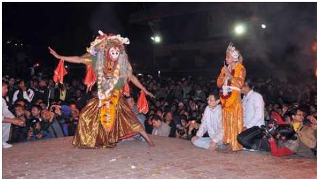
नेपाल परिचय/२१३
रहेको पाइन्छ ।
नेपाल बहुजातीय, बहुभाषिक, बहुधार्मिक एवम् बहुसांस्कृतिक विशेषतायुक्त देश हो । यहाँ सांस्कृतिक विविधताभित्र एकता पाइन्छ । यहाँका विविध संस्कृतिबीच परापूर्वकालदेखि नै अपूर्व मेल रहिआएको छ । सांस्कृतिक बहुलवादको सिद्धान्तबाट सिँचित संस्कृति भएकाले यहाँ सांस्कृतिक सम्बन्धको पनि आदानप्रदान भएको पाइन्छ । नेपाललाई साभा संस्कृतिको विकास भएको मुलुक भनी सगौरव भन्न सकिन्छ ।
६.२.१ नेपालमा मनाइने प्रमुख जात्रा एवम् चाडपर्व
नेपालमा विभिन्न जातजाति, विभिन्न भाषाभाषी बोल्ने र विभिन्न धर्म मान्ने मानिसहरू बस्दछन् । विभिन्न जातजाति र धर्म मान्ने मानिसहरूका आ-आफ्ना रीतिथिति रहनसहन चालचलनहरूमा पनि विविधता पाइन्छ । नेपालमा मनाइने प्रमुख जात्रा, चाडपर्व एवम् बाजागाजाको बारेमा तल चर्चा गरिएको छ :
बिस्का जात्रा (बिस्केट)
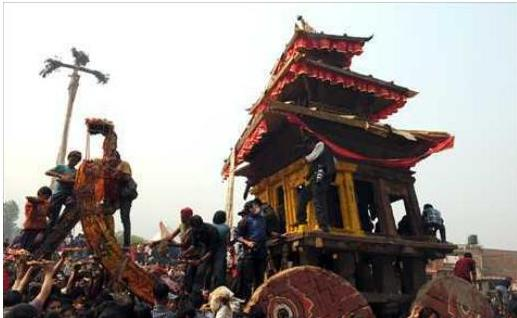
बिस्का जात्रा, भक्तपुर
भक्तपुरमा चैत महिनाको अन्तिम हप्ताको चौथो दिनदेखि नववर्षको सुरुवात मेष सङ्क्रान्तिमा मनाइने यो जात्रालाई विश्वकेतु यात्रा, विश्वासृत यात्रा, विसिका जात्रा भनिनुका साथै एक वर्षको अन्त्यदेखि अर्को नववर्षको सुरुआतसम्म मनाइने यो पर्वलाई दुईवर्षे मेला पनि भनिन्छ । यो वेलामा सब इष्टमित्रहरूसँग भेटघाट गरी एकअर्कामा शुभकामना साटासाट गरिन्छ । शिवस्वरूप भैरव रथयात्रा गर्नुलाई बिस्केट जात्राको महत्त्वपूर्ण पक्ष मानिन्छ । यस दिन रथ जुधाउने, जित्ने छेड्ने तथा खटजात्रासमेत गर्ने गरिन्छ ।
२१४/नेपाल परिचय
सेतो मच्छन्द्रनाथ जात्रा
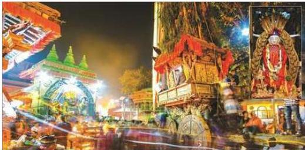
सेतो मच्छन्द्रनाथ जात्रा
सम्पूर्ण प्राणीजगत्का मालिक आर्यावलोकितेश्वरलाई नै सेतो मच्छन्द्रनाथ भनिन्छ । नेवारी भाषामा यिनलाई श्रीजनवहाद्य भनिन्छ । आर्यावलोकितेश्वर श्वेत मच्छन्द्रनाथको मूर्ति र मन्दिर काठमाडौँ केलटोलको मच्छन्द्रबहाल वा कनक चैत्य विहारको मध्यमा अवस्थित छ । प्राणी मात्रको भलाइको कामना गर्दै दूध, दही आदि द्रव्यले स्नान गराई रज्जमाला भरेर सुसज्जित गराई चैत्र अष्टमीमा शुभ साइट जुराई रथयात्रा गराइन्छ ।
जुड्शीतल
नेपालीहरू वैशाख १ गतेलाई नववर्ष मान्दछन् भने मैथिली संस्कृतिमा वैशाख २ गते जुड्शीतल पर्ने र सोही दिनदेखि नव वर्ष सुरु भएको मानिन्छ । यस अवसरमा मिथिलामा सामूहिक भोजन र रज्जारज कार्यक्रम आयोजन गरिन्छ । छरछिमेकीमा अबिर, रड, हिलो छ्यापाछ्याप गरी होलीको जस्तै उत्साहमय वातावरणमा यो पर्व मनाइन्छ । यस पर्वका दिन दुलाबडा अभिभावकहरूबाट बिहानै उठी स्नान गरी नित्यकर्म पूरा गरी लोटामा पवित्र शीतल जल लिएर सोही जललाई दाहिने हातको अञ्जुलीमा राखी आशीर्वचनका साथ अभिषेक गरिने हुँदा यस पर्वको नाम जुड्शीतल रहन गएको हो भन्ने विश्वास छ ।
मातातीर्थ औँसी
नेपालमा प्रत्येक वर्ष मनाइने विभिन्न चाडपर्वमध्ये आमा र आफ्नो देशको गुण सम्भने प्रेरणा प्रदान गर्न सक्ने खालका मौलिक चाडपर्वहरू पनि छन् । जसमा वैशाख कृष्ण औँसीको दिन मनाइने मातृऔँसी, मातृ-दिवस र मातातीर्थ औँसी नामको प्रख्यात पर्वोत्सव पनि एउटा हो । यो दिन आमाको महत्वपूर्ण गुण सम्भने प्रेरणा प्राप्त गरी आमाप्रति रहेको श्रद्धा-भक्ति प्रकट गर्ने दिन भएकाले मातृऔँसी नामले प्रख्यात छ । यस दिन छोराछोरीले आमालाई हर्षपूर्वक मानमर्यादा गरी श्रद्धाका साथ मिठा-मिठा खानेकुरा खुवाई प्रसन्न तुल्याउनुपर्दछ ।
नेपाल परिचय/२१५
यस कार्यद्वारा प्रसन्न भएकी आमाले प्रदान गरेको आशीर्वादको प्रभावले छोराछोरीलाई ठुलो फल प्राप्त हुन्छ भन्ने मान्यता रहेको पाइन्छ । आमा नहुनेहरू यस दिन काठमाडौँको मातातीर्थ नामक तीर्थमा वा अन्य तीर्थादिमा गई नुहाइधुवाई गरेर सिदा तथा पिण्ड दान गर्नुपर्दछ । त्यस कार्यबाट दिवइगत माता प्रसन्न भई दिएको आशीर्वादको प्रभावले छोराछोरीहरू जनधनले सुसम्पन्न भई महासुख भोग गर्न पाउने हुन्छन् भन्ने जनविश्वास पाइन्छ ।
इद
नेपालमा इस्लाम धर्मावलम्बीहरूले इद पर्व उत्साहका साथ मनाउँछन् । रमजानको ब्रत समाप्त भएको अवसरमा नवौँ महिना रमजानको समाप्तिपूर्छ दशौँ सावाल महिनाको पहिलो दिन इदुल फित्र मनाइने र हिजरी पात्रोको अन्तिम १२ महिना जिल्हज्को १० गते इद उल अज्हा वा बकर इद मनाइन्छ । इद उल फित्रमा दान, बकर इदमा पशुबलि चढाउने गरिन्छ ।
सिरुवा पर्व
नव वर्षको उपलब्धमा भापा, मोरङ र सुनसरी जिल्लामा बसोबास गर्ने राजवंशी जातिले आफ्ना कुलदेवताको पूजा गरी हिलो तथा रङ छ्यापाछ्याप गर्दै सिरुवा पर्व मनाउँछन् । राजवंशी जातिको महत्वपूर्ण सिरुवा पर्वको वेलामा लसुन र प्याज घरबाहिर भुन्ड्याइन्छ । महाभारतकालमा परशुरामले क्षेत्रीय जातिविहीन पृथ्वी बनाउन क्षेत्रीयहरूलाई मार्दै हिँड्ने क्रममा राजवंशी जातिलाई मार्न लाग्दा लसुन, प्याज ढोकामा भुन्ड्याएको देखेकाले उनीहरू बचेको आख्यान भएकाले अद्यापि लसुन, प्याज भुन्ड्याउने परम्परा छ । यसै दिन ७ प्रकारका तरकारी मिसाएको सागजाती बनाएर खाने गरिन्छ । सिरुवा पर्वमा राजवंशी समुदायका कुलदेवता ठाकुर विसरीको पूजा गर्नुका साथै टिष्टाबुढीका नामले टिस्टा नदीको पनि पूजा गरिन्छ । यो पर्व राजवंशी जातिका अतिरिक्त थारु, ताजपुरिया, कहार, गनगाई जातिले पनि उत्साह र उम्रका साथ मनाउने गर्दछन् । यो अवसरमा हाटमेला भन्ने र गानबजान गरी रडारङ नृत्य गर्ने गरिन्छ ।
उँभौली र उँधौली
यो राई जातिहरूले मान्ने पर्व हो । यो पर्व एउटा उँधौली र अर्को उँभौलीको रूपमा वर्षमा दुई पटक मनाइन्छ । यो पर्वमा कसैले चण्डीनाचका रूपमा, कसैले साकेला वा
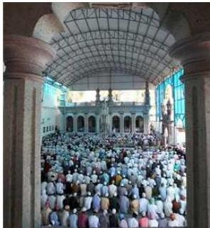
२१६/नेपाल परिचय
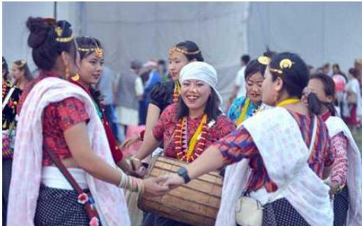
साकेला पर्व
साकेवाका रूपमा र कसैले वैशाखे तथा वाडाङमेटको रूपमा मनाउने चलन छ । राई जातिहरूको पनि फरक-फरक संस्कृति भएकाले यो पर्व पनि फरक फरक समय र नामबाट विभिन्न ढङ्गले मनाइन्छ । उँभौली वैशाख-जेठतिर मनाइन्छ भने उँधौली कात्तिक, मङ्सिर महिनातिर मनाइन्छ । यस पर्वमा नाक्छोङ वा पुजारीले चण्डी थान, मार्गाथान, माङ्खिम आदि ठाउँमा मुन्धुम भनेर पूजाआजा गर्ने गर्दछन् । प्रत्येक घरघरमा पितृको पूजा गर्ने, ढोल, भ्याम्टा बजाएर नाचगान गर्ने र मिठामिठा खानेकुरा खाएर यो पर्व मनाउने चलन छ ।
बुद्धजयन्ती
इसापूर्व ५६३ मा वैशाख शुक्ल पूर्णिमाका दिन बुद्धको जन्म भएको, वैशाख शुक्ल पूर्णिमाकै दिन बुद्धत्व प्राप्त गरेको र इसापूर्व ४८३ मा वैशाख शुक्ल पूर्णिमाकै दिन महापरिनिर्वाण प्राप्त गरेकाले ‘वैशाख शुक्ल पूर्णिमा (स्वाँया पुन्है)’ बुद्धजयन्तीका रूपमा मुलुकभर मनाइन्छ । यस दिन बौद्ध मठ, गुम्बा एवम् विहारहरूमा ठुलो जमघट हुन्छ ।
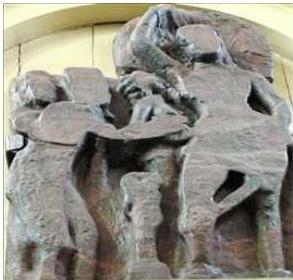
नेपाल परिचय/२१७
चासोक ताडनाम
लिम्बू समुदायको विशिष्ट महान् पर्व चासोक ताडनाम प्रत्येक वर्ष वैशाख शुक्ल पूर्णिमा र मंसिर शुक्ल पूर्णिमाका दिन पर्दछ । न्वागी पूजासमेत भनिने चासोक ताडनाम पर्वमा नयाँ पाकेका फलफूल (अन्न, फलफूल) देवीदेवतालाई चढाएर मात्र आफूले खाई रातभर यालङ्मा, च्याबुङ नाच नाच्दै, हाक्पारे गीत गाउँदै रमाइलो गरिन्छ । यो पर्व लिम्बू जातिको ऐक्यबद्धता, साभा, समृद्ध, संस्कृतिको प्रतीकको रूपमा मनाइन्छ ।
चासोक ताडनाम
लिम्बू समुदायको विशिष्ट महान् पर्व चासोक ताडनाम प्रत्येक वर्ष वैशाख शुक्ल पूर्णिमा र मंसिर शुक्ल पूर्णिमाका दिन पर्दछ । न्वागी पूजासमेत भनिने चासोक ताडनाम पर्वमा नयाँ पाकेका फलफूल (अन्न, फलफूल) देवीदेवतालाई चढाएर मात्र आफूले खाई रातभर यालङ्मा, च्याबुङ नाच नाच्दै, हाक्पारे गीत गाउँदै रमाइलो गरिन्छ । यो पर्व लिम्बू जातिको ऐक्यबद्धता, साभा, समृद्ध, संस्कृतिको प्रतीकको रूपमा मनाइन्छ ।
रातो मच्छिन्द्रनाथ जात्रा
! 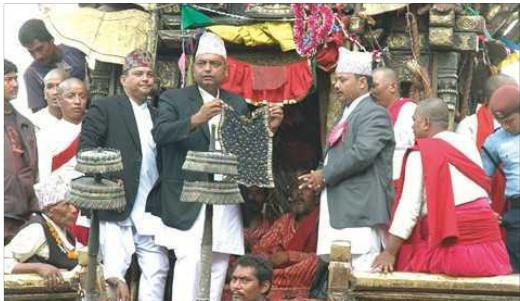
काठमाडौँ उपत्यकाका संरक्षक तथा प्राणीजगत्का पालनकर्ता भगवान् लोकनाथलाई रातो मच्छिन्द्रनाथ भनिन्छ । मच्छिन्द्रनाथलाई दूध, दहीको महास्नान गराउनुको साथै पुल्चोक, ललितपुरबाट रथयात्रा सुरु गरी पाटन जावलाखेलमा मच्छिन्द्रनाथको भोटो देखाई जात्रा सम्पन्न गरिन्छ । यो जात्रा चैत्र-वैशाखमा सुरु भई भन्डै महिनाभरि नै चल्दछ । रातो मच्छिन्द्रनाथ बर्ष र सहकालको देवताको रूपमा प्रख्यात छ । जसलाई उपत्यकाको सबैभन्दा लामो जात्राको रूपमा लिइन्छ ।
२१८/भैपाल परिचय
कुमार षष्ठी वा सिथी नखः
सिठी वा सिथी नखः नेवार समुदायको प्रसिद्ध पर्व हो । जेठ शुक्ल षष्ठीका दिन मनाइने यस पर्वमा कुमार कात्तिकेयको विशेष विधिले पूजा गरी खटयात्रा गर्ने गरिन्छ । यसै दिन प्रायः नेवारहरूको देवाली पूजाका साथै इनार सफाइ गर्ने काम गरिन्छ । यो चाड कृषक समुदायको प्रसन्नता र समृद्धिसँग पनि सम्बन्धित छ ।
साउने सड्क्कान्ति
दक्षिणायनको सुरुआत हुने र साउनको पहिलो दिन पर्ने हुँदा कर्कट सड्क्कान्तिलाई साउने सड्क्कान्ति पनि भनिन्छ । यो दिन पनि बिहान स्नान, पूजा आदि गरी देवीदेवताहरूको दर्शन गरिन्छ भने साँभमा काण्डरक राक्षसको पूजा गर्ने, दुःख, कष्ट, अशुभ सड्केतका रूपमा लुतो फाल्ने गरिन्छ ।
गुँला पर्व
बौद्ध मतानुयायी नेवारी समुदायमा श्रावण शुक्ल प्रतिपदा (नेपाल संवत्को गुँला महिना) देखि एक महिनासम्म गुँला उत्सव मनाइन्छ । यसअन्तर्गत भक्तजनहरू बुद्ध भगवान्को दर्शनार्थ बौद्ध मठ तथा विहारमा जान्छन् । यस अवसरमा पञ्चदान, विभिन्न देवीदेवताको सार्वजनिक प्रदर्शन र मतया गरी तीन चरणमा यो उत्सव सम्पन्न गरिन्छ । आफन्त मृतकहरूको सम्भवनामा तीर्थस्थलहरूमा बत्ती बाली दर्शनार्थ जाने मतयाजात्रा भाद्र कृष्ण द्वितीयाका दिन पर्दछ । यसै दिन भगवान् बुद्धले मार विजय गरेको मानिन्छ ।
जनैपूर्णिमा
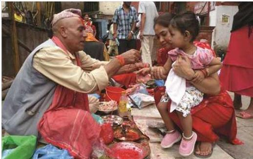
नेपाल परिचय/२१९
प्रत्येक वर्ष श्रावण शुक्ल पूर्णिमाका दिनलाई जनैपूर्णिमा/ऋषितर्पणी पूर्णिमा भनिन्छ । त्यस दिन नयाँ जनै लगाउनुका साथै पूरोहितहरूद्वारा रक्षाबन्धन (पहेँलो वा रातो धागोको डोरो) बाँधिन्छ र दक्षिणा दिइन्छ । कतिपय समुदायमा नौ किसिमका गेडागुडीलाई भिजाएर टुसा उमारी क्वाटी खाने गरिन्छ । तराई क्षेत्रका विभिन्न समुदायले सो दिन दिदीबहिनीले दाजुभाइलाई राखी बाँधेर एकअर्काको दीर्घायुको कामना गर्दछन् ।
नागपञ्चमी
नेपालभरमा प्राचीन समयदेखि प्रत्येक वर्ष ऋषिपञ्चमी, श्रीपञ्चमी आदि प्रमुख पञ्चमी तिथिका दिनहरूमा मनाइने पर्वोत्सवहरूमध्ये घरघरका ढोकामा नागपटहरू अर्थात् नाग लेखिराखेका चित्रहरू टाँसी तिनीहरूमा र नागका प्रतिमाहरूमा विधिपूर्वक पूजा गरी श्रावण शुक्ल पञ्चमीका दिन मनाइने नागपञ्चमी नामक पर्वोत्सव पनि एउटा हो ।
गाईजात्रा (सा:पार)
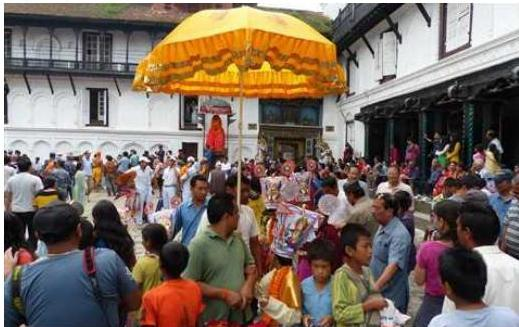
गाईजात्रा, काठमाडौँ
यो पर्व जनैपूर्णिमाको भोलिपल्ट अर्थात् भाद्रकृष्ण प्रतिपदाका दिनदेखि सात दिनसम्म मनाइन्छ । छोरा चक्रवर्तेन्द्र मल्लको मृत्युपछि शोकग्रस्त रानीलाई खुसी पार्न राजा प्रताप मल्लले पहिलो पटक गाईजात्राको आयोजना गरेका र यसमा रानीको शोकहरण भएको किंवदन्ती छ । यसमा खड्गजात्रा, रोपाईजात्रा, लाखेनाच, षड्दर्शन ख्याली, लोकनृत्य, डबलीनृत्य, नाटक आदि प्रदर्शन गरिन्छ ।
तिज
तिज नेपाली नारीहरूद्वारा विशेष पर्वको रूपमा मनाइने गरिन्छ । यो चाड भाद्र शुक्ल
२२०/नेपाल परिचय
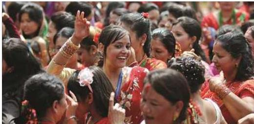
तिजमा रमाउँदै ब्रतालु महिलाहरू
तृतीयका दिन पर्दछ । हिन्दु नारीहरूका लागि यो विशेष चाड हो । यस दिन नारीहरू उपवास बसी ब्रत लिन्छन् । नारीहरूले इच्छाअनुसारको पति पाउनका लागि र आफू सौभाग्यवती रहनका लागि यो ब्रत लिने प्रचलन छ ।
गोरा (गौरा)
गोरा (गौरा पर्व) सुदूरपश्चिमको सबैभन्दा ठुलो पर्व हो । सामान्यतया यो पर्व भाद्र शुक्ल पक्षमा मनाइन्छ । अगस्त उदयपछि यो पर्व नमनाइने हुँदा भाद्र शुक्ल पक्षमा अगस्त उदय हुने भएमा भने त्यसवर्ष भाद्र कृष्ण पक्षमा नै यो पर्व मनाइन्छ । श्रावण शुक्ल एकादशी (पुत्रदा एकादशी) को उपासना नगरी गोराब्रत उपासना गर्न नहुने चलन छ । गोरा एकादशीदेखि गोरा सेलाउने (गौरालाई बिदाइ गर्ने) दिनसम्म यो पर्व मनाइने भएकाले सामान्यतया एक महिनासम्म मनाइन्छ तैपनि विरुङा भिजाउने, विरुङा धुने, गोरा भित्र्याउने र ऐठेबाली गोरापर्वका महत्वपूर्ण चार दिन हुन् । यस पर्वमा शिव-गौरीका साथै गणेशको पूजा गोरा उपासिकाहरूले कामिक तथा मानसिक शुद्धता कायम राख्दै ठुलो आस्थापूर्वक गर्ने चलन छ । उपास्य देव-देवी (शिव, गौरी र गणेश) को पूजा उपासिकाहरूले सामूहिक रूपमा विरुङा (मास, गहत, गुराँस, सानो केराउ र गहुँ/जौ मिश्रित क्वाटी)ले गर्ने चलन छ । ऐठेवालीको दोस्रो दिनदेखि तीन दिनदेखि सात दिनसम्म स्थानीय देव-देवीका मन्दिर परिसरहरूमा परम्परागत रूपमा दुःखको, धुमारी, ठुलो (भारी) खेल, देउडाजस्ता धार्मिक एवं मनोरञ्जनात्मक गीत/गाथाहरू गाउँदै नाच्चै धुमधामसाथ यो पर्व मनाइन्छ । महिलाहरूका साथै पुरुषहरूको समेत सहभागिता रहने गोरा पर्वको सांस्कृतिक तथा आर्थिक महत्व रहिआएको छ ।
कुशे औँसी
प्रत्येक वर्ष भाद्रकृष्ण औँसीको दिन कुशे औँसी पर्दछ । यस दिन ब्राह्मणहरूले जुनसुकै शास्त्रीय नित्य नैमित्तिक कर्महरूमा नभई नहुने पवित्र कुश शास्त्रोक्त वचनानुसार
नेपाल परिचय/२२१
विधिपूर्वक पूजा गरी छेदन गरेर यस दिन कुशका मुठा घरमा राख्नाले कल्याण हुन्छ भन्ने मान्यता रहेको पाइन्छ । त्यसैले त्यस कुशको नामबाट यस पर्वोत्सवको नाम कुशो औँसी रहन गएको पाइन्छ । यस दिन बाबुलाई ठुलो श्रद्धाभक्तिका साथ रुचिअनुसारका खाद्यवस्तुहरू खुवाई आशीर्वादको कामना गर्ने चलन रहेको छ । बाबु नहुनेहरूले आफ्ना बाबुको नामबाट सिधादान, श्राद्ध आदि गरेर गुरु पुरोहितहरूलाई आफ्ना बाबुको प्रतीक मानेर केही खाद्यवस्तु खुवाउने गरिन्छ ।
दसैँ
आश्विन महिनाको शुक्ल प्रतिपदादेखि दशमीसम्म १० दिनपर्यन्त चल्ने भएको हुँदा वा दशमीलाई विशेष महत्त्व दिएकाले यसको नाम दसैँ रहन गएको अनुमान गर्न सकिन्छ । यस पर्वलाई नेपालको राष्ट्रिय पर्वको रूपमा मनाइन्छ । मान्यजनको आशीर्वाद, निधारभरि टीका, कपाल र कानमा जमरा, गलामा विभिन्न किसिमका माला दसैँ पर्वका विशेषता हुन् । यस पर्वमा नौ दिनसम्म देवीका विभिन्न रूपको पूजाअर्चना, फूलपाती महोत्सव आदि कार्यक्रम गरिन्छ ।
तिहार
कात्तिक कृष्ण त्रयोदशीदेखि पाँच दिनसम्म मनाइने यो पर्व दाजुभाइ, दिदीबहिनीहरूको स्नेह र शुभेच्छाको पर्व हो । यी ५ दिन यमराज आफ्नी बहिनी यमुनाकहाँ आई बसेको र यमुनाले उनको सेवा र पूजा गरेको घटनालाई यससँग आबद्ध गरी यो पाँच दिनलाई यमपञ्चक पनि भन्ने गरिन्छ । यस पर्वमा काग, कुकुर, लक्ष्मी, गाई, गोरुको पूजा गर्दै अन्तिम दिन भाइपूजा गर्ने गरिन्छ । यस दिन दिदीबहिनीहरूले आफ्ना दाजुभाइको सुख, समृद्धि र दीर्घायुको कामना गर्दै टीका लगाई मिष्ठान्न खुवाउने गर्दछन् । यस अवसरमा भैलो तथा देउसी खेली मनोरञ्जन गरिन्छ ।
छठ पर्व
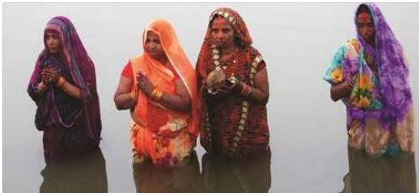
२२२/नेपाल परिचय
विशेषतः पूर्वी एवम् मध्यतराई (धनुषा, महोत्तरी, सर्लाही) क्षेत्रमा मानिने सबैभन्दा ठुलो र महत्वपूर्ण चाड छठ हो । यो कालिक शुक्ल पक्ष षष्ठीमा खासगरी जनकपुरमा धुमधामले मनाइन्छ । जनकपुरका गड्गासागर, धनुषासागर, रत्नसागर, अग्निकुण्ड, विहारकुण्ड र पापमोचनी जस्ता तीन सयजति सागर कुण्डहरू तथा पोखरी र २७ ओटा नदीहरूमा ब्रतालुवर्ग सूर्योदयअधि नै नदी किनार गई पानीमा छातीसम्म डुबेर स्नान, ध्यान गरेर सूर्योपासना, आराधना र आरतीका लागि पूर्वको प्रकाशको प्रतीक्षा गर्छन् । सप्तमीको बिहान सूर्योदयअधि जलकिनारामा पुगी सूर्योदयमा नैवेद्यसमेत अर्धदान गरिन्छ । आफ्नो भाकल वा मनोकामना पूर्ण होस् भन्नाका लागि कतिपय ब्रतालुहरूचाहिँ छातीले घम्रेर नदी किनार वा पोखरीछेउ पुगी आफ्नो कठोर साधनाबाट ब्रत पूरा गर्छन् । षष्ठीको सौभ ऋतुर्यास्त हुने वेलामा प्रसाद र नैवेद्यादि लिएर अस्ताउँदो सूर्यलाई प्रणाम गर्दछन् । सूर्योपासनाबाट मनोकामना पूरा गर्न भाकल गर्नेले विशेष रूपमा पूजा गर्ने यो पर्व हाल काठमाडौँ उपत्यकालगायत देशैभरि मनाउन थालिएको छ ।
ल्होसार
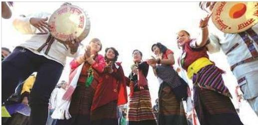
ल्होसार पर्व मनाउँदै
उत्तरी हिमाली खण्डको शेर्पा, भोटे, गुरुङ, थकाली र तामाङ जातिहरूले तिब्बती पात्रोअनुसार नववर्षारम्भको अवसरमा माघ महिनातिर पर्ने ल्होसार पर्व विशेष उत्साहका साथ मनाउँछन् । वर्षको गणना मुसा, गाई, बाघ, बिरालो, गरुङ, सर्प, घोडा, भेडा, बाँदर, चरा, कुकुर र सुंगुरको नाममा गरिन्छ र प्रत्येक १२ वर्षमा यो चक्र दोहोरिन्छ । विभिन्न प्रकारका ल्होसारमध्ये सोनाम, तमु र ग्याल्बो ल्होसारमा नेपालमा सम्बन्धित धर्मावलम्बीहरूलाई सार्वजनिक बिदा दिने प्रचलन रहेको पाइन्छ ।
श्रीपञ्चमी
माघ शुक्ल पञ्चमीका दिन मनाइने पर्वलाई श्रीपञ्चमी वा वसन्तपञ्चमी भनिन्छ । यो
नेपाल परिचय/२२३
वसन्त आगमनको प्रतीकको पर्व हो । यस दिन सरस्वती देवी र महामञ्जुश्री गुरुको पूजा आराधना गरिन्छ । साना बालबालिकालाई अक्षर आरम्भ गराउने दिनको रूपमा समेत मनाइन्छ । सरस्वतीको स्तुति गरिन्छ । विभिन्न मन्दिर र घरघरमा भक्तिपूर्वक पूजा गरी मन्दिरका भित्ताहरूमा सरस्वतीको नाम लेख्नाले पढ्न आउँछ भन्ने विश्वास गरिन्छ । यसै दिन हनुमानढोका दरबारमा वसन्त श्रवण गरिन्छ । वसन्त ऋतुसम्बन्धी श्लोकहरू सुन्ने कार्यलाई वसन्त श्रवण भनिन्छ ।
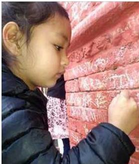
क्रिसमस
विश्वका अन्य मुलुकका क्रिश्चियन धर्मावलम्बी जस्तै नेपालमा पनि इसाई धर्मावलम्बीहरूले २५ डिसेम्बरमा धुमधामसँग क्रिसमस मनाउँछन् । मानिसबाट भएको पापको प्रायश्चित्तका खातिर यसु ख्रिस्टको क्रसमा भुन्ड्याएर भएको बलिदानीको स्मरणस्वरूप मनाइने यस पर्वमा इसाई धर्मावलम्बीहरूले विश्वशान्ति, प्रेम र आशाका निमित्त चर्चहरूमा गई प्रार्थना गर्ने र शुभकामना एवम् उपहारको आदानप्रदान गर्ने गर्दछन् । यो दिन सार्वजनिक बिदा हुन्छ ।
माघे सङ्क्रान्त
माघे सङ्क्रान्त थारू समुदायको मुख्य पर्व हो । यस पर्वलाई पश्चिममा माघ, मध्यतराईमा खिचडी र पूर्वमा तिला सङ्क्रान्तिको नामबाट धुमधामका साथ मनाइने गरिन्छ । यसलाई थारूहरूले नयाँ वर्ष सुरुवातको रूपमा पनि लिने गरेका छन् । सहरबजारमा अहिले यो पर्व माघी महोत्सव भनेर मनाउने गरिन्छ ।
सूर्य राशिचक्रमा १०औँ स्थानको मकर राशिमा प्रवेश गर्दा मकर सङ्क्रान्ति हुन जान्छ । उत्तरायणको सुरुवात हुने र माघ महिनाको पहिलो दिन पर्ने हुँदा यसलाई माघे सङ्क्रान्त पनि भनिन्छ । यस दिन मकर स्नान गरी पूजाआजा गरी देवीदेवताको दर्शन गर्ने गरिन्छ । सूर्य राशिचक्रको चौथो कर्कट राशिमा प्रवेश गर्दा कर्कट सङ्क्रान्ति हुन्छ । उक्त दिन नुवाकोटको तारुकामा गोरु जुधाउने पर्व मनाइन्छ ।
माघे सङ्क्रान्त मगरहरूको समेत प्रमुख पर्व हो । नेपालका मगर जातिहरूबीच माघे सङ्क्रान्तिलाई मुख्य पर्वको रूपमा धुमधामसँग मनाउने चलन छ । मगरहरूको राष्ट्रिय
२२४/नेपाल परिचय
पर्व घोषणा भइसकेको माघे सड्कान्ति पूर्व र पश्चिम अर्थात् मगरहरूबीचमै पनि भिन्न विशेषता र प्रकृतिमा मनाइने गरेको छ । माघे सड्कान्तिलाई मगर जातिले तीन दिनसम्म धुमधामका साथ चेलीबेटी पुर्ज्ने र पितृपूजा गर्ने पर्वका रूपमा मनाउने गरेको पाइन्छ ।
होली
हिन्दु संस्कृतिमा प्रत्येक वर्षको फागुन शुक्ल पूर्णिमालाई होली पूर्णिमा भनिन्छ । यो हिन्दुहरूको एउटा महत्त्वपूर्ण चाड हो । होली रङहरूको चाड हो । फागुन महिनामा मनाइने हुनाले यस चाडलाई फागु पूर्णिमा पनि भनिन्छ । फागुन शुक्ल अष्टमीको दिन काठमाडौँको वसन्तपुर दरबारअगाडि चीर (विशेष रूपले सजाइएको लिङ्गो) गाडेपछि होली सुरु भएको मानिने फागु पर्व पूर्णिमाको राति उक्त चीरलाई ढालेर जलाएपछि समाप्त भएको ठानिन्छ । होली हिन्दुहरूको अत्यन्त प्राचीन पर्व हो । यस पर्वको वर्णन नारद पुराण, भविष्य पुराण जस्ता प्राचीन ग्रन्थहरूमा पनि उल्लेख गरिएको छ । यो पर्व प्राचीन समयका नास्तिक हिरण्यकश्यपु, तिनका छोरा प्रह्लाद र बहिनी होलिकाको कथासँग जोडिएको छ । यस पर्वमा पहाडमा पूर्णिमाको दिन र तराईमा भोलिपल्ट सार्वजनिक बिदा हुन्छ ।
रामनवमी
त्रेतायुगमा चैत्र शुक्ल नवमीका दिन भगवान् विष्णुका १० अवतारमध्ये एक मर्यादा पुरुषोत्तम रामको जन्म भएकाले रामको पूजाअर्चना गर्दै रामनवमीका रूपमा मनाइन्छ । तराई क्षेत्रमा चैते दसैँ (सानो दसैँ)को महत्त्व नभए पनि त्यसैको अर्को दिन रामनवमीलाई हर्ष एवम् उल्लासका साथ मनाइन्छ । यो दिन नेपालको जनकपुर क्षेत्र, भगवान् रामको जन्मभूमि (अयोध्या) र अन्यत्र रहेका राम मन्दिरहरूमा भगवान् राम र देवी सीताको विशेष पूजाअर्चना गरिन्छ ।
महाशिवरात्रि
प्रत्येक वर्ष फागुन कृष्ण चतुर्दशीको दिन पर्ने यो पर्वमा काठमाडौँको पशुपतिनाथको मन्दिर र अन्यन्त्र स्थापित शिवालयहरूमा श्रद्धालु भक्तजनहरूको ठुलो जमघट हुन्छ । महाशिवरात्रिका दिन नेपालमा सैनिक दिवस पनि मनाइन्छ ।
चैते दसैँ
चैत शुक्ल अष्टमीका दिन मनाइने यो पर्वलाई सानो दसैँ पनि भनिन्छ । लमजुङ जिल्लामा दुरा जातिले यो पर्व विशेष धुमधामका साथ मनाउँछन् । यस दिन सेतो मच्छन्द्रनाथको रथयात्रा सुरु गरिन्छ ।
घोडेजात्रा
चैत्र कृष्ण चतुर्दशी वा पिचास चतुर्दशीका दिन काठमाडौँमा पाँहाचक्रे वा पासाचक्रे अथवा मित्र चतुर्दशी मनाउने, लुकु माहाद्रोको पूजा गर्ने र औँसीका दिनमा उपत्यकामा घोडेजात्रा
नेपाल परिचय/२२५
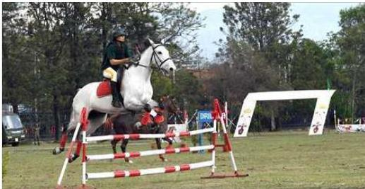
घोडेजात्रा, काठमाडौँ
मनाउने गरिन्छ । यो दिन काठमाडौँको टुँडिखेलमा घोडादौड समारोह आयोजना गरिन्छ । घोडालाई अनुशासन, शक्ति र तीव्रताको प्रतीकको रूपमा मानिन्छ ।
भूमिपूजा (भूमि पर्व)
मगर जातिभित्र रहेका हजारौँ मौलिक संस्कार, संस्कृति र परम्परागत सामाजिक मूल्य मान्यताको धरातलमा संसारका आदिवासी मानव जाति साभा आदिवासीय विशेषता बोकेको मगर जातिको ऐतिहासिक, सांस्कृतिक, सामाजिक र राजनैतिक विशेषता बोकेको एक मौलिक चाड भूमि पर्व (भूमिपूजा पर्व) / भूम्या पर्व हो । यस पर्वलाई मगर खाम पाङ (भाषा) मा बल्कु, नाम्क वा नोगोबाञ्ज नामले पनि चिनिने गरिन्छ । भूमि पर्व (नाम्क) निकै प्राचीन मौलिकता बोकेको मगर जातिको चाड हो । यो पर्व असार १ गतेदेखि भौगोलिक क्षेत्रअनुसार कतिपय ठाउँमा श्रावण १ गतेका दिन पनि मनाउने प्रचलन रहेको छ । यस पर्वलाई मगर जातिले आर्थिक वर्षको रूपमा लिने गर्दछ भने स्थानीय रूपमा पुरानो सत्ता सञ्चालकलाई बिदाइ गरेर नयाँ नेतृत्वलाई सत्ता हस्तान्तरण गर्नुका साथै पर्वको वेलामा आन्तरिक जनगणना गरेर जनसङ्ख्याको जानकारी पनि लिने गरिन्छ । खासगरी प्रकृतिको कुनै क्षति नहोस्, रोगव्याधी नलागोस्, पृथ्वीसहित सबै प्राणी जातिको कल्याण होस् भन्ने कामनासहित पूजा गर्नु नै भूमि पर्वको मुख्य मर्म हो । यो पर्वको सभ्यता र संस्कृति पश्चिम नेपालको रोल्पा, रुकुमलगायतका जिल्लामा मनाउने गरेको पाइन्छ ।
तोरनल्ह (पितृपूजा)
नेपालमा थकाली समुदायमा पितृपूजाका रूपमा प्रचलित यो पर्व फागु पूर्णिमाको एक दिनअगाडि सुरु भई फागु पूर्णिमाको भोलिपल्ट (३ दिन) सम्म मनाइन्छ । यो अवसरमा पितृहरूलाई खिमि (पिक) दान गरिन्छ । यो पर्वमा मध्यरातपछि र बिहान कुखुरा बास्नुभन्दा
२२६/नेपाल परिचय
अगाडि घरकी प्रमुख महिलाले स्नान गरी शुद्ध भएर सालको पातमा राखेर मृतक पितृहरूको सम्भना गरी पिण्डदान गर्ने गरिन्छ । पिण्डदान कार्यमा पुरुष जातिको सहभागिता हुँदैन । यस अवसरमा मेवा-मिष्ठान्न खाने, राम्रा नयाँ कपडा लगाउने, आफन्त इष्टमित्रहरूसँग भेटघाट गर्ने आदिका अतिरिक्त पुरुषहरूबीच धनुवान हान्ने प्रतियोगिता (तारो खेल) र महिलाहरूमा ढुङ्गाको गड्डा खेल्ने प्रतियोगिता आयोजना गरिन्छ ।
पाता मेला
नेपालका आदिवासी सतार जातिले मनाउने यो पर्वमा भापा जिल्लाको ज्यामिर र भारतका सन्थालहरू हजारौँको सङ्ख्यामा सहभागी भई शिव-पार्वतीको पूजाअर्चना गर्दै नाचगानका साथै विभिन्न सांस्कृतिक कार्यक्रम आयोजना गर्ने गरिन्छ ।
ट्हुटे पर्व
गाउँबस्तीलाई विभिन्न विकृतिहरूबाट बचाउन, वन्य जीवजन्तुहरूबाट बालीनाली, पाल्तु जीवजन्तु र मानिसको समेत रक्षाका लागि, बाह्य आक्रमणबाट गाउँबस्तीको रक्षा गर्न तमसेका तमु राजा मेसरो र उनका वीर योद्धाहरूको लोककथा र गाथाहरूलाई स्मरण गर्दै भक्तिम्लोबाट निर्मित हातहतियारबाट सुसज्जित भई चर्को स्वरमा कराउँदै र ठुलो आवाजमा ढोल, ढ्याङ्ग्रो र याम्रो बजाउँदै आफ्नो शत्रुलाई गाउँबस्तीको सीमापारि कटाएको प्रतीकात्मक अभिनय गुरुङ (तमू) जातिले मनाउने ट्हुटे पर्वमा प्रस्तुत गरिन्छ । सुख, शान्ति, निर्भयको कामना गर्दै अनुहारमा कालो लगाई शिरमा पक्षीहरूका पर्वख सिउरेर बाजागाजा बजाएर नाच्दै मनाइने पर्वले गुरुङ (तमू) भेषभूषा, रहनसहन, सांस्कृतिको प्रतिनिधित्व गर्दछ ।
पेन्दिया
मध्य तथा सुदूरपश्चिम नेपालका थारूहरू आफ्नो खेतीपाती सकेर खलिहान (धान भान्न बनाइएको समतल ठाउँ) बाट सबै अन्न भित्र्याएको दिनलाई पेन्दियाको रूपमा मनाउँछन् । यस दिन थारू समुदायका गुरु पुरोहितले खलिहानमा विशेष किसिमको पूजा गर्दछन् ।
गढीमाई मेला
बारा जिल्लाको बरियारपुरमा ५-५ वर्षको अन्तरालमा गढीमाईको मेला लाग्दछ, जहाँ नेपाल र भारतका लाखौँ भक्तजनहरू मेला भर्न आउँछन् । यस मेलामा गढीमाईलाई राँगा, बोका र पक्षीहरूको भोग चढाइन्छ ।
६.२.२ नेपालका सांस्कृतिक सम्पदाको विवरण
प्राचीनकालदेखि परम्पराको रूपमा चलिआएका मानव संस्कारलाई नै सांस्कृति भनिन्छ । धार्मिक आस्था र विश्वास भलिकने सांस्कृतिलाई सांस्कृतिक सम्पदा भनिन्छ । हाम्रा परम्परागत मूल्य मान्यता, रहनसहन, धर्म र धार्मिक ग्रन्थ, लोकनृत्य, अभिलेख, शिलापत्रहरू नै सांस्कृतिक सम्पदा हुन् । सन् २०१९ सम्ममा विश्वका ऐतिहासिक तथा
नेपाल परिचय/२२७
सांस्कृतिक महत्त्वका ८६९ ओटा स्थान विश्वसम्पदामा परेका छन् । नेपालका चार ओटा स्थानलाई विश्वसम्पदा सूचीमा सूचीकृत गरिएको छ, त्यसमध्ये दुई स्थान ऐतिहासिक तथा सांस्कृतिक महत्त्वका रहेका छन् । यिनै विभिन्न सम्पदाले नै समाजको विशेषतालाई प्रतिबिम्बित गर्दछन् । सांस्कृतिक सम्पदाको संरक्षणका लागि पुरातत्त्व विभागको स्थापना गरिएको थियो । भौतिक र अभौतिक गरी दुई प्रकारका सांस्कृतिक सम्पदा हुन्छन् ।
भौतिक सांस्कृतिक सम्पदाहरू : पौराणिक मठमन्दिर, गुम्बा, स्तूप, मूर्ति, सालिक, ऐतिहासिक दरबार, ताम्रपत्र, शिलालेखजस्ता अभिलेखहरू, लोकनृत्य, लोकबाजा, चित्रकला, ऋषिमुनिका तपोभूमिका रूपमा रहेका हिमाल-पहाड तथा नदीहरू ऐतिहासिक गुफा तथा तीर्थस्थल, श्रीखण्ड, रुद्राक्ष, धार्मिक महत्त्वका वृक्षहरू, प्राचीन गरगहना, प्राचीन हातहतियार आदि ।
अभौतिक सांस्कृतिक सम्पदाहरू : धर्म, परम्परा, रहनसहन, भेषभूषा, चालचलन, रीतिथिति, चाडपर्व, तिथि, ब्रत आदि अभौतिक सांस्कृतिक सम्पदा हुन् ।
६.२.३ विश्वसम्पदा सूचीमा सूचीकृत नेपालका सांस्कृतिक तथा प्राकृतिक सम्पदाहरू :
मानवीय मस्तिष्क, समाज र सांस्कृतिको विकाससँगै गहनाका रूपमा स्थापित भएका धरोहर, स्मारक, स्मारकस्थलहरू बहुमूल्य सम्पदा हुन् । ती सम्पदा विश्व मानव जातिका साभा सम्पदा हुन्, यसको संरक्षण गर्नु हामी सबैको दायित्व हो । त्यस्ता स्मारकहरू नाश भएपछि पुन:स्थापना गर्न प्राय: असम्भव हुन्छ । तिनको नाश हुनु सम्पूर्ण मानव सम्पदाको नाश हुनु हो, तिनीहरूको संरक्षण गरिनुपर्दछ भन्ने उद्देश्यले UNESCO ले विश्वसम्पदा समितिअन्तर्गत विभिन्न सांस्कृतिक तथा प्राकृतिक सम्पदाहरूलाई Convention Concerning the Protection of World Cultural and Natural Heritage, 1972, (World Heritage Convention, 1972) विश्वसम्पदा महासन्धिको रूपमा स्थापित गरी यसको प्रावधानअनुरूप विश्वसम्पदाको रूपमा सूचीकृत गर्ने काम भइरहेको छ । World Heritage Convention, 1972 सन् १९७५ देखि लागु भएको हो भने नेपालले सन् १९७८ मा यसको अनुमोदन गरेको हो ।
६.२.३.१ विश्वसम्पदा सूचीमा सूचीकृत नेपालका सांस्कृतिक सम्पदा
क) काठमाडौँ उपत्यका
सन् १९७८ मा नेपाल पक्ष राज्य वा सदस्य बनेपछि काठमाडौँ उपत्यकाका अद्वितीय, अनुपम सांस्कृतिक सम्पदाहरूको विशिष्ट विश्वव्यापी महत्त्व, आधिकारिकता एवम् अविच्छिन्नताका कारण तिनको संरक्षण एवम् व्यवस्थापनका लागि विश्वसम्पदा सूचीमा सूचीकृत गर्न नेपालले गरेको अनुरोधलाई अनुमोदन गरी UNESCO/WHC ले विश्वसम्पदामा समावेश गर्ने निर्णय गन्यो (UNESCO/WHC, 1979) । यसरी काठमाडौँ उपत्यकाका सात क्षेत्रलाई एक रूपमा काठमाडौँ उपत्यका विश्वसम्पदास्थल भनी सूचीकरण गरिसकेपछि नेपाल सरकारले आफ्नो नैतिक दायित्व एवम् उच्चस्तरीय सुरक्षा वा संरक्षणका लागि नेपालको सम्पदा संरक्षणसम्बन्धी प्रमुख कानुनको रूपमा रहेको प्राचीन स्मारक संरक्षण
२२८/नेपाल परिचय
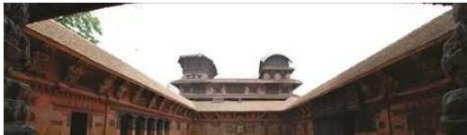
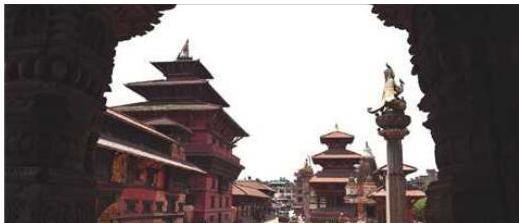
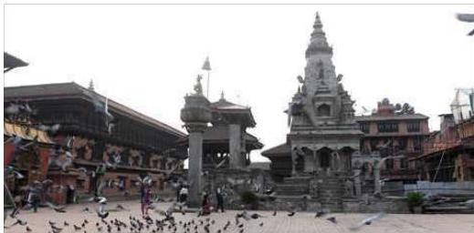
ऐन, २०१३ को दफा ३ अनुसार यी सात क्षेत्रलाई चार किल्ला तोकी सीमाङ्कन गरी क्रमशः स्वयम्भू (वि.सं. २०३६), हनुमानढोका, पाटन र भक्तपुर दरबार क्षेत्र, चौगुनारायण तथा बौद्ध (वि.सं. २०४१), पशुपति (२०५५) लाई अलग-अलग संरक्षित स्मारक क्षेत्र भनी घोषणा (नेपाल सरकार, २०३६, २०४१, २०५५) गरेको थियो ।
नेपाल परिचय/२२९
ख) लुम्बिनी, भगवान् बुद्धको जन्मस्थल, विश्वसम्पदा स्थल
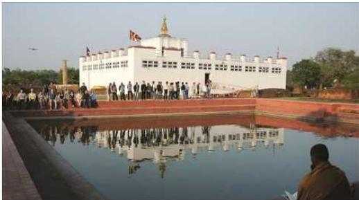
मायादेवी मन्दिर, लुम्बिनी
भगवान् बुद्धको जन्मस्थलको रूपमा परिचित लुम्बिनीलाई विश्वसम्पदा महासन्धि, १९७२ को अनुमोदन गरेको करिब १७ वर्षपछि सन् १९९६ मा मात्र विश्वसम्पदा सूचीमा समावेश गर्नका लागि युनेस्को विश्वसम्पदा समितिमा अनुरोध गरी पठाइएको र त्यसैको अर्को साल अर्थात् सन १९९७ मा विश्वसम्पदा समितिले सूचीमा सूचीकृत गर्ने निर्णय गरेको थियो (UNESCO/WH 1997) ।
लुम्बिनी पवित्र उद्यान र वरपर भएका विभिन्न पुरातात्विक अवशेषहरूले यो क्षेत्र बौद्ध धर्म एवम् दर्शनका प्रवर्तक भगवान् बुद्धका जन्मसँग प्रत्यक्ष सम्बन्ध रहेको छ, जुन धर्म र दर्शन वर्तमान विश्वका अधिकतम मानव समुदायले अवलम्बन गरिरहेको छ ।
६.२.३.२ विश्वसम्पदा सूचीमा सूचीकृत प्राकृतिक सम्पदाहरू :
- सगरमाथा राष्ट्रिय निकुञ्ज
स्थापना : २०३२ साल (सन् १९७६)
मध्यवर्ती क्षेत्रको स्थापना : २०५८ साल (सन् २००२)
क्षेत्रफल : १,१४८ वर्ग कि.मि.
मध्यवर्ती क्षेत्रको क्षेत्रफल : २७५ वर्ग कि.मि.
पूर्वी नेपालको सगरमाथा अञ्चलको सोलुखुम्बु जिल्लामा रहेको यो राष्ट्रिय निकुञ्ज विश्वको सर्वोच्च शिखर सगरमाथा (८८.८.८६ मि.) लाई समेटेर फैलिएको छ । यसैगरी, ६,००० मिटरभन्दा अग्ला ल्होत्से, नुप्से, चोयु, ल्होत्सेसार, पुमोरी, आमादब्लम, थामसेकु जस्ता हिमचुचुराहरूले यस निकुञ्जको गौरवलाई अभ्र बढाएका छन् । यहाँ स्थानीय बासिन्दा र पर्वतारोहीहरूले प्रयोग गर्दै आएका गोक्यो, खुम्बु, छुकुम र नाङ्पा मुख्य
२३०/नेपाल परिचय
चारओटा उपत्यका रहेका छन् । यस निकुञ्जभित्रको गोक्यो र सम्बद्ध तालहरूलाई सन् २००७ मा रामसार सूचीमा समावेश गरिएको छ । उच्च पर्वतीय वातावरण रहेको यस राष्ट्रिय निकुञ्जमा गोब्रे सल्ला, डिग्रे सल्ला, हेमलक, धुपी, भोजपत्र, गुराँस जातका रुखहरू पाइन्छन् । वसन्त ऋतुमा लालीगुराँसका फूलहरूले निकुञ्जभित्रको जड्गललाई अति मनोरम र सुन्दर बनाउँछन् । कस्तूरी मूग, हिमाली भालु, हिउँ चितुवा, थार, घोरल, भारत जस्ता वन्यजन्तुहरूका साथै डाँफे, चिलिमे, कालिज, हिमकुखुरा, लालचुच्चे काग (टुङ्गा) र पहेलो चुच्चे काग (टेमुलगायत १९३ प्रजातिका चरा यस राष्ट्रिय निकुञ्जका प्राकृतिक गहना हुन् । सन् १९७९ देखि यस राष्ट्रिय निकुञ्जलाई विश्वसम्पदा सूचीमा समावेश गरिएको छ ।
२. चितवन राष्ट्रिय निकुञ्ज
स्थापना : २०३० साल (सन् १९७३) मध्यवर्ती क्षेत्रको स्थापना: २०५३ साल (सन् १९९६) क्षेत्रफल : ९५२.६३ वर्ग कि.मि. मध्यवर्ती क्षेत्रको क्षेत्रफल : ७२९.३७ वर्ग कि.मि.
चितवन, मकवानपुर, पर्सा र पूर्वी नवलपरासी जिल्लाका केही भूभागमा फैलिएको यो राष्ट्रिय निकुञ्ज नेपालको पहिलो राष्ट्रिय निकुञ्ज हो । यसको क्षेत्रफल ९५२.६३ वर्ग कि.मि. रहेको छ । यस निकुञ्जले चुरे पहाड, राप्ती, नारायणी र रिउ नदीका मुख्य क्षेत्रहरूलाई समेटेको छ । निकुञ्जको करिब ७० प्रतिशत वन क्षेत्र सालको जड्गलले ढाकेको छ । विश्वमै दुर्लभ मानिएको एकसिडे गैंडा, पाटेबाघ, सोंस, गौरीगाई, काठे भालु, चितुवा, रतुवा, चितल, लगुना, जरायो, चौसिंगे, बाँदर र लड्गुरलगायत ६० भन्दा बढी किसिमका स्तनधारी जड्गली जनावरहरू पाइन्छन् । यसैगरी, घडियाल गोही, मगर गोही,
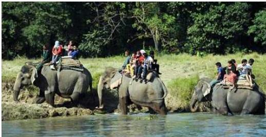
नेपाल परिचय/२३१
अजिजरलगायत सरिसृप तथा उभयचर, बसाई सरी आएका र रैथाने गरी ५४६ भन्दा बढी जातका चराचुरुही र विभिन्न किसिमका किराफ्ट्याङ्ग्राहरूले यस निकुञ्जलाई अभ धनी बनाएका छन् । यिनै प्राकृतिक महत्वका वस्तुहरूको संरक्षणलाई ध्यानमा राखी सन् १९८४ मा चितवन राष्ट्रिय निकुञ्जलाई विश्वसम्पदा सूचीमा समावेश गरिएको छ ।
स्रोत : नेपाल सरकार वन तथा वातावरण मन्त्रालय, राष्ट्रिय निकुञ्ज तथा वन्यजन्तु संरक्षण विभाग
६.२.३.३ सम्भावित विश्वसम्पदास्थलहरू
नेपालले सन् १९९६ र सन् २००८ मा गरी दुई पटक विभिन्न राष्ट्रिय सम्पदाहरूलाई सम्भावित विश्वसम्पदाको सूचीमा सूचीकृत गरिसकेको छ, जसमध्ये सन् १९९६ मा सम्भावित विश्वसम्पदाको सूचीमा सूचीकृत गरेको लुम्बिनी, भगवान् बुद्धको जन्मस्थललाई सन् १९९७ मा नेपाल सरकारको आफ्नै पहलमा गरिएको अनुरोधअनुरूप प्रक्रियागत रूपमा नै विश्वसम्पदा सूचीमा सूचीकृत गरिएको थियो । यसका अतिरिक्त देहायका राष्ट्रिय सम्पदास्थलहरू हालसम्म पनि सम्भावित विश्वसम्पदा सूचीमा सूचीकृत अवस्थामा रहेका छन् :
- Cave architecture of Muktinath Valley of Mustang (23/05/1996)
- Khokana, the vernacular village and its mustard-oil seed industrial heritage (23/05/1996)
- Ramagrama, the relic stupa of Lord Buddha (23/05/1996)
- The early medieval architectural complex of Panauti (23/05/1996)
- The medieval palace complex of Gorkha (23/05/1996)
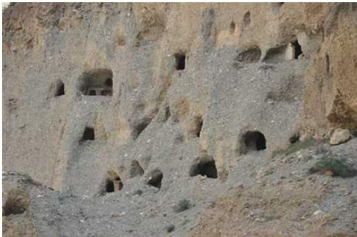
२३२/नेपाल परिचय
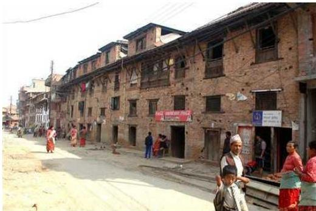
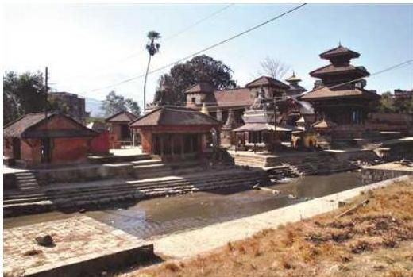
- Tilaurakot, the archaeological remains of ancient Shakya Kingdom (23/05/1996)
नेपाल परिचय/२३३
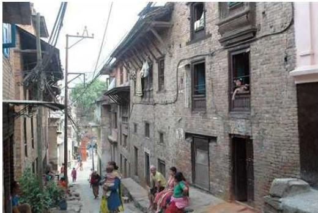
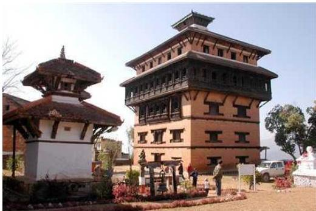
- Medieval Earthen Walled City of Lo Manthang (30/01/2008)
- Medieval Settlement of Kirtipur (30/01/2008)
२३४/भैपाल परिचय
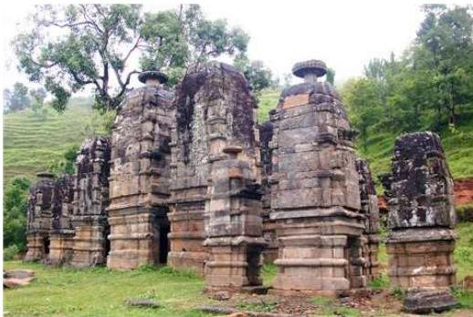
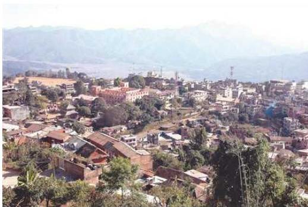
- Nuwakot Palace Complex (30/01/2008)
- Ram Janaki Temple (30/01/2008)
नेपाल परिचय/२३५
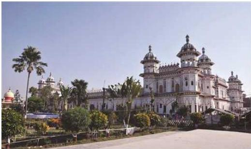
राम जानकी मन्दिर, धनुषा
- Bhurti Temple Complex of Dailekh (30/01/2008)
- Rishikesh Complex of Ruru Kshetra (30/01/2008)
- Sinja Valley (30/01/2008)
- The Medieval Town of Tansen (30/01/2008)
- Vajrayogini and Early Settlement of Sankhu (30/01/2008)
तालिका नं. ६.३ विश्वसम्पदा सूचीमा सूचीकृत नेपालका सांस्कृतिक र प्राकृतिक सम्पदाहरू
| क्र.सं. | सम्पदा | सूचीकृत मिति | क्षेत्रफल | मुख्य आकर्षण | |
|---|---|---|---|---|---|
| १ | क | चाँगुनारायण | सन् १९७९ | चाँगुनारायण मन्दिरको शिलालेख | |
| ख | भक्तपुर दरबार | सन् १९७९ | पञ्चपन्न भ्याले दरबार | ||
| ग | स्वयम्भू महाचैत्य | सन् १९७९ | विश्वविख्यात बौद्ध महाविहार | ||
| घ | बौद्ध खास्ती | सन् १९७९ | ३६ मि. अग्लो बौद्ध खास्ती | ||
| ङ | हनुमानढोका दरबार | सन् १९७९ | काष्टमण्डप, हनुमानको मूर्ति, वसन्तपुर दरबार, तलेजु मन्दिर, कुमारी घर, सङ्ग्रहालय आदि । |
२३६/लेपाल परिचय
| च | पशुपतिनाथ | सन् १९७९ | २६४ हेक्टर | पशुपतिनाथको मन्दिर, जयवागेश्वरी, देवपतन, श्लेष्मान्तक वन, गुह्येश्वरी आदि । | |
|---|---|---|---|---|---|
| छ | पाटन दरबार | सन् १९७९ | कृष्ण मन्दिर, महाबौद्ध, रातो मच्छन्द्रनाथको मन्दिर, सड्याहालय आदि । | ||
| २ | लुम्बिनी | सन् १९९७ | १११५० | बुद्धको जन्मस्थल, मायादेवी मन्दिर, अशोक स्तम्भ, पुष्करिणी पोखरी, सड्याहालय आदि । | |
| ३ | सगरमाथा राष्ट्रिय निकुञ्ज | सन् १९७९ | सगरमाथा, ह्लोत्से, चोयुजस्ता हिमशिखर, डाँफे, हिउँचितुवा आदि । | ||
| ४ | चितवन राष्ट्रिय निकुञ्ज | सन् १९८४ | ९३२ वर्ग कि. मि. | एकसिञ्जे गैंडा, पाटेबाघ, मयूर आदि जस्ता जीवजन्तु र विविध वनस्पतिहरु । |
स्रोत : नेपाल सरकार संस्कृति, पर्यटन तथा नागरिक उद्देशन मन्त्रालय, पुरातत्व विभाग ।
६.२.४ राष्ट्रिय सांस्कृतिक सम्पदाको संरक्षणसम्बन्धी दीर्घकालीन नीति
नेपाल सरकारबाट राष्ट्रिय सांस्कृतिक नीति २०६७ जारी गरिएको छ । भाषा, कला, संस्कृति, ललितकला र सङ्गीत नाट्य क्षेत्रको विकास, प्रवर्द्धन र संरक्षणका लागि नेपाल प्रज्ञा प्रतिष्ठान, नेपाल ललितकला प्रज्ञा प्रतिष्ठान र नेपाल सङ्गीत तथा नाट्य प्रज्ञा प्रतिष्ठानको गठन भई सञ्चालनमा रहेका छन् ।
राष्ट्रिय अभिलेखालय, राष्ट्रिय सड्याहालय छाउनी, राष्ट्रिय मुद्रा सड्याहालय, राष्ट्रिय कला सड्याहालय भक्तपुर, प्रदेश सड्याहालय पोखरा, प्रदेश सड्याहालय सुर्खेत, प्रदेश सड्याहालय धनकुटा, प्रदेश दरबार सड्याहालय पाल्पा, गोरखा सड्याहालय, कपिलवस्तु सड्याहालय, नुवाकोट दरबार सड्याहालयको स्थापना भई पुरातात्विक वस्तुहरू संरक्षणतर्फ कार्यक्रमहरू सञ्चालन भइरहेका छन् । त्यसैगरी, ७२ जिल्लाका सम्पदाहरूको सूचीकरण भई त्यसैअनुरूपका कार्यक्रमहरू सञ्चालन भइरहेका छन् । साथै, विश्वसम्पदा सूचीमा सूचीकृत सम्पदाहरूको संरक्षणका लागि कार्यक्रमहरू सञ्चालनमा रहेका र पवित्र धार्मिक स्थल देवघाट क्षेत्रको २० वर्षे गुरुयोजना स्वीकृत भएको, अन्य जातीय सड्याहालयहरू स्थापनाको कार्यलाई निरन्तरता दिई स्थानीय निकाय र समुदायको सहभागितामा धरान, चितवन, कीर्तिपुर, पोखरा, दाङ र जुम्लामा जातीय सड्याहालय स्थापना कार्य सुरु गरिएको, काठमाडौँको गोकर्णमा जनआन्दोलन तथा सहिद स्मृति सड्याहालयको पूर्वाधार विकास
नेपाल परिचय/२३७
सुरु गरिएको, नारायणहिटी दरबार सङ्ग्रहालय स्थापना भई केही भाग सर्वसाधारणको अवलोकनका लागि खुला गरिएको साथै मैथिली साहित्यका महाकवि विद्यापतिको स्मृति पुरस्कारका लागि रु. १ करोडको अक्षयकोष स्थापना गरिएको छ। लुम्बिनी, पशुपति र जनकपुर क्षेत्रका गुरुयोजनाअनुरूप पूर्वाधार विकाससम्बन्धी क्रियाकलापहरूसमेत सञ्चालन भइरहेका छन्।
-
- +
२३८/नेपाल परिचय
परिच्छेद : सात